재무회계 · SAP FI
자격증 확인 ↗Financial Accounting
SAP S/4HANA의 재무회계 프로세스와 회계 업무 구성을 다루는 자격증입니다.

업무 요구를 이해하고,
코드와 화면으로 구현합니다.
SAP 재무·관리회계와 ABAP·Fiori 개발 역량을
공식 디지털 배지로 확인할 수 있습니다.
SAP S/4HANA의 재무회계 프로세스와 회계 업무 구성을 다루는 자격증입니다.
SAP S/4HANA의 원가 및 관리회계 프로세스와 업무 구성을 다루는 자격증입니다.
ABAP Cloud 환경에서 SAP 비즈니스 애플리케이션의 백엔드를 개발하는 기술을 다루는 자격증입니다.
SAP Fiori 애플리케이션의 사용자 인터페이스와 개발 기술을 다루는 자격증입니다.

FI·CO 업무 및 결산 관리
입금·비용 처리부터 배부와 결산, 분석까지 연결한 팀 프로젝트의 담당 구현입니다.
배부 사이클과 매출채권 반제를 중심으로, 사용자가 처리 근거를 확인하고 결과를 검토할 수 있도록 만들었습니다.
입금부터 반제, 관련 전표 확인까지.
업무 흐름 보기 ↗02 / FI · HR연계 사례감가상각과 인건비 배치, 자산 이력 조회.
업무 흐름 보기 ↗03 / CO대표 사례배부 근거와 단계별 시뮬레이션, 확정과 취소.
업무 흐름 보기 ↗04 / FI · CO연계 사례CDS·OData를 통해 UI5 분석 화면으로 연결.
업무 흐름 보기 ↗담당 범위 FI·CO 프로그램과 인건비 배치 개발을 소개합니다. 다른 모듈은 연계 관계로 구분하며, 표준원가 산정·생산 비용 차액 정산·G/L 마스터 관리 프로그램은 담당 구현에 포함하지 않았습니다.
입금 내역과 미결채권을 연결하고, 검토 후 반제 결과를 확정합니다.
업로드한 입금 내역을 조회하고 저장합니다. 입금과 가수금 전표를 연결해 이후 채권 반제에서 대조할 수 있게 구성했습니다.
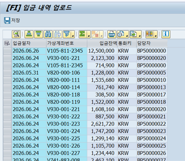
입금일자·가상계좌·금액·거래처를 확인하고 저장합니다.
관련 구현
FORM save_deposit .
DATA : ls_save TYPE zte2fi0012,
lt_save LIKE TABLE OF ls_save,
lv_tabix TYPE sy-index,
ls_item_tmp TYPE zse2fi0001.
CLEAR : lv_tabix, gt_docs.
LOOP AT gt_deposit INTO gs_deposit.
lv_tabix = sy-tabix.
MOVE-CORRESPONDING gs_deposit TO ls_save.
ls_save-seq_no = lv_tabix.
ls_save-wrbtr = ls_save-d_amt.
ls_save-status = 'N'.
IF ls_save-erdat IS INITIAL.
ls_save-erdat = sy-datum.
ls_save-erzet = sy-uzeit.
ls_save-ernam = sy-uname.
ELSE.
ls_save-aedat = sy-datum.
ls_save-aezet = sy-uzeit.
ls_save-aenam = sy-uname.
ENDIF.
CLEAR gs_current_doc.
gs_current_doc-header-bukrs = '1000'.
gs_current_doc-header-gjahr = sy-datum(4).
gs_current_doc-header-blart = 'DZ'. " 입금
gs_current_doc-header-bldat = gs_deposit-ban_dat.
gs_current_doc-header-budat = gs_deposit-ban_dat.
gs_current_doc-header-waers = gs_deposit-waers.
gs_current_doc-header-xblnr = ls_save-seq_no. " 참조번호에 일련번호 매핑
ls_item_tmp = VALUE #( bschl = '40'
shkzg = 'S'
hkont = '0010000002'
wrbtr = gs_deposit-d_amt
sgtxt = |[고객 입금] { gs_deposit-contact }| ).
APPEND ls_item_tmp TO gs_current_doc-items.
ls_item_tmp = VALUE #( bschl = '50'
shkzg = 'H'
hkont = '0020000004' " 임시 지정한 가수금 계정
wrbtr = gs_deposit-d_amt
sgtxt = |[입금 가계정] { gs_deposit-contact }| ).
APPEND ls_item_tmp TO gs_current_doc-items.
APPEND gs_current_doc TO gt_docs.
APPEND ls_save TO lt_save.
CLEAR ls_save.
ENDLOOP.
IF gt_docs IS NOT INITIAL.
CALL METHOD zcl_e2_fi_posting=>create_fi_multi_document
EXPORTING
iv_wrttp = '04' " 실제 데이터
IMPORTING
ev_last_belnr = gv_last_belnr
et_fi_head = gt_fi_head
et_fi_item = gt_fi_item
CHANGING
ct_docs = gt_docs.
LOOP AT lt_save ASSIGNING FIELD-SYMBOL(<fs_save>).
READ TABLE gt_fi_head INTO DATA(ls_head_map) WITH KEY xblnr = <fs_save>-seq_no.
IF sy-subrc = 0.
<fs_save>-belnr = ls_head_map-belnr.
ENDIF.
ENDLOOP.
ENDIF.
IF lt_save IS NOT INITIAL.
MODIFY zte2fi0012 FROM TABLE lt_save.
IF sy-dbcnt > 0.
COMMIT WORK AND WAIT.
MESSAGE s002.
ENDIF.
ENDIF.
ENDFORM.거래처와 조회 기간을 선택하고 미결채권·예금 내역을 대조합니다. 연체·미연체·채권 없음 상태를 구분해 후속 처리가 필요한 고객을 확인합니다.
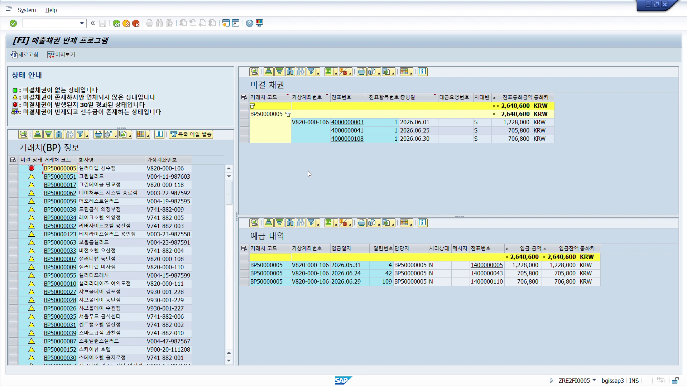
샐러디랩 성수점의 미결채권과 예금 내역을 함께 확인합니다.
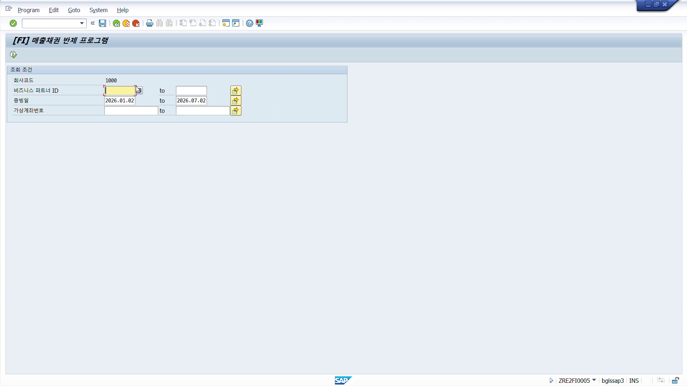
회사코드·거래처·증빙일·가상계좌로 조회 범위를 지정합니다.

거래처 코드와 이름을 보고 조회 대상을 선택합니다.

상태 아이콘과 거래처 목록에서 조회할 고객을 선택합니다.
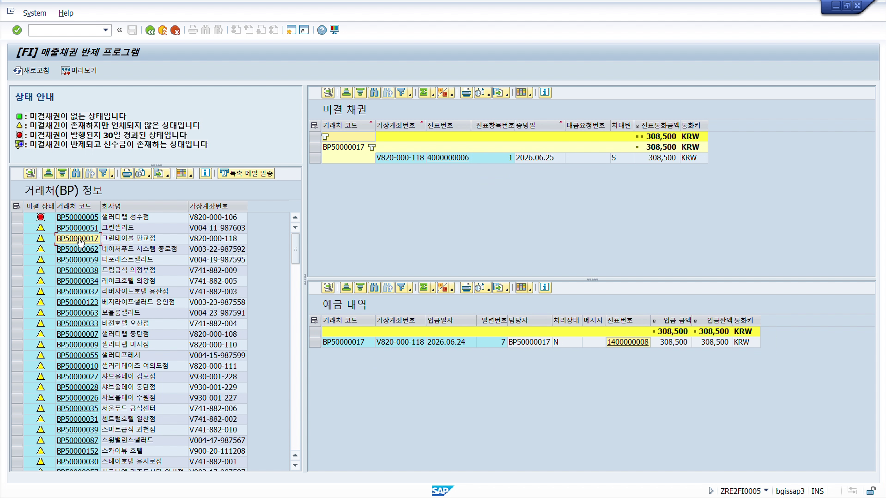
그린테이블 판교점의 미결채권과 입금 내역을 확인합니다.
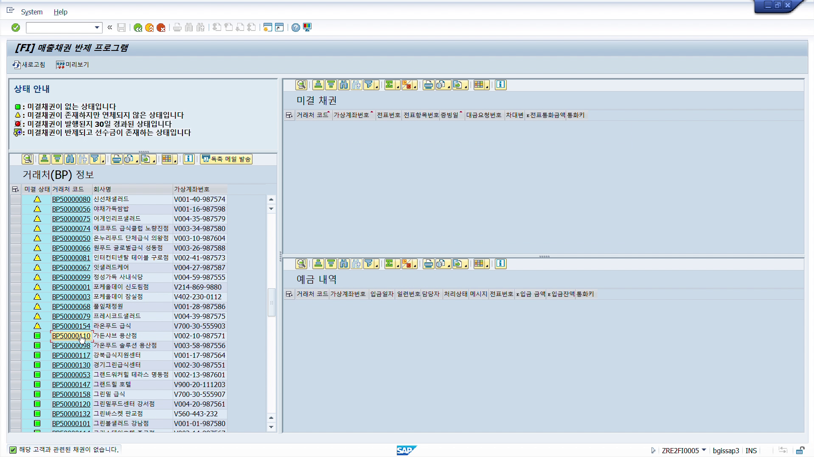
가든샤브 용산점의 채권 미존재 상태를 확인합니다.
관련 구현
FORM handle_hotspot_click USING ps_row TYPE lvc_s_row
ps_col TYPE lvc_s_col.
IF ps_row-rowtype IS NOT INITIAL.
EXIT.
ENDIF.
READ TABLE gt_bpheader INTO gs_bpheader INDEX ps_row-index.
IF sy-subrc NE 0.
EXIT.
ENDIF.
CASE ps_col-fieldname.
WHEN 'PARTNER'.
PERFORM hotspot_ardata USING gs_bpheader-partner.
PERFORM hotspot_deposit USING gs_bpheader-vacct.
ENDCASE.
IF sy-subrc NE 0.
EXIT.
ENDIF.
ENDFORM.실제 반제 전에 전체 고객의 처리 결과를 시뮬레이션합니다. 미결채권보다 입금액이 크면 차액을 선수금으로 처리하고, 입금이 부족하면 남은 채권을 확인합니다.
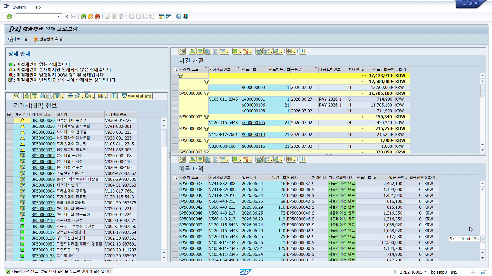
실제 확정 전에 고객별 채권·입금 변화를 미리 확인합니다.
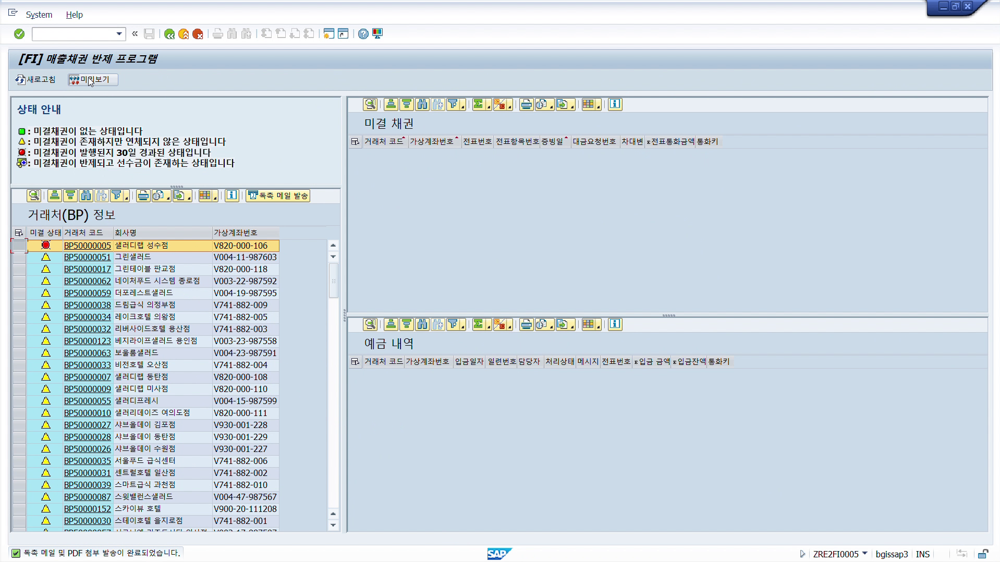
화면 상단의 미리보기 기능으로 시뮬레이션을 시작합니다.
입금액과 채권액을 대조해 초과 입금 처리 결과를 검토합니다.
관련 구현
IF lt_docs IS NOT INITIAL.
IF pv_simul IS INITIAL.
CALL METHOD zcl_e2_fi_posting=>create_fi_multi_document
EXPORTING
iv_wrttp = '04'
IMPORTING
ev_last_belnr = lv_fi_belnr
et_fi_head = lt_fi_head
et_fi_item = lt_fi_item
ev_subrc = DATA(lv_subrc)
ev_commit = DATA(lv_mtd_commit)
CHANGING
ct_docs = lt_docs.
ELSE.
LOOP AT lt_docs ASSIGNING FIELD-SYMBOL(<ls_doc>).
DATA(lv_fake_nr) = |${ sy-tabix WIDTH = 9 ALIGN = RIGHT PAD ='0' }|.
DATA(lv_fake_buzei) = '001'.
LOOP AT <ls_doc>-items INTO DATA(ls_sim_item).
APPEND VALUE #(
partner = ls_sim_item-partner
hkont = ls_sim_item-hkont
wrbtr = ls_sim_item-wrbtr
rebzg = ls_sim_item-rebzg
rebzz = ls_sim_item-rebzz
belnr = lv_fake_nr
buzei = lv_fake_buzei
gjahr = sy-datum(4)
) TO lt_fi_item.
lv_fake_buzei = lv_fake_buzei + 10.
ENDLOOP.
ENDLOOP.
ENDIF.READ TABLE lt_akont INTO DATA(ls_akont) WITH KEY partner = <fs_deposit>-partner BINARY SEARCH.
LOOP AT gt_aropen ASSIGNING FIELD-SYMBOL(<fs_open>)
WHERE vacct EQ <fs_deposit>-vacct
AND wrbtr > 0
AND shkzg = 'S'.
DATA(lv_remain_ar_amt) = <fs_open>-wrbtr.
READ TABLE lt_partial INTO DATA(ls_part) WITH KEY rebzg = <fs_open>-belnr
rebzz = <fs_open>-buzei.
IF sy-subrc EQ 0.
lv_remain_ar_amt = lv_remain_ar_amt - ls_part-wrbtr.
ENDIF.
LOOP AT lt_new_open INTO DATA(ls_np) WHERE rebzg = <fs_open>-belnr
AND rebzz = <fs_open>-buzei
AND shkzg = 'H'.
lv_remain_ar_amt = lv_remain_ar_amt - ls_np-wrbtr.
ENDLOOP.
IF lv_remain_ar_amt <= 0.
CONTINUE.
ENDIF.검토한 결과를 확정하고 고객별 처리 결과를 확인합니다. 입금이 부족한 고객은 잔여 채권이 남고, 초과 입금 또는 채권 없는 입금은 선수금으로 남겨 이후 거래에서 우선 상계합니다.

전체 고객의 반제 결과와 처리 완료 메시지를 확인합니다.

일괄 반제를 확정하기 전 고객별 채권과 입금을 확인합니다.
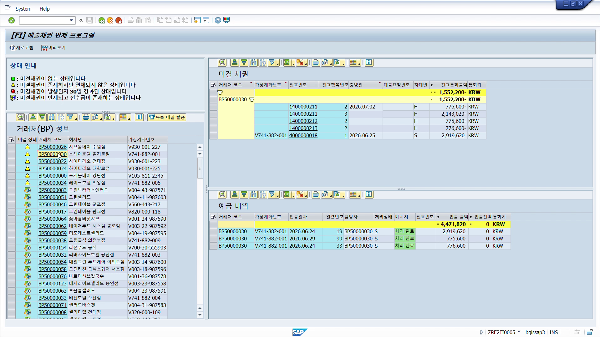
입금액이 채권액보다 작은 스테이호텔 을지로점의 남은 채권을 확인합니다.
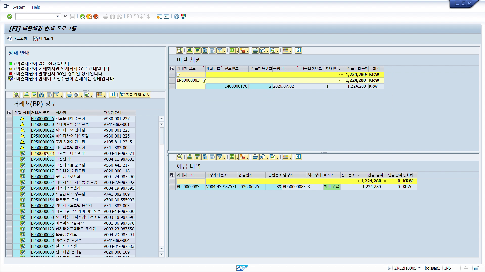
채권 없이 입금한 고객의 선수금을 확인합니다. 대변 잔액은 음수로 표시하며, 예금 내역에도 선수금 잔액이 남습니다.
관련 구현
IF pv_simul IS INITIAL.
IF lt_del_open IS NOT INITIAL.
INSERT zte2fi0008 FROM TABLE lt_del_open.
IF sy-subrc NE 0.
CLEAR lv_commit.
ENDIF.
DELETE zte2fi0006 FROM TABLE lt_del_open.
IF sy-subrc NE 0.
CLEAR lv_commit.
ENDIF.
ENDIF.
LOOP AT gt_deposit ASSIGNING FIELD-SYMBOL(<fs_upd>) WHERE status = 'N'
AND d_amt = 0.
CLEAR ls_deposit_upd.
<fs_upd>-status = 'S'.
<fs_upd>-message = TEXT-m01. " 성공 메시지
READ TABLE lt_fi_head INTO DATA(ls_head_map) WITH KEY = <fs_upd>-seq_no.
IF sy-subrc NE 0.
<fs_upd>-belnr = ls_head_map-belnr.
ENDIF.
MOVE-CORRESPONDING <fs_upd> TO ls_deposit_upd.
APPEND ls_deposit_upd TO lt_deposit_upd.
ENDLOOP.
IF lt_deposit_upd IS NOT INITIAL.
UPDATE zte2fi0012 FROM TABLE lt_deposit_upd.
IF sy-subrc NE 0.
CLEAR lv_commit.
ENDIF.
ENDIF.
IF lv_commit IS NOT INITIAL. " CRUD에 오류가 없었으면 COMMIT
DATA(lv_count) = lines( lt_fi_head ).
IF lv_fi_belnr IS INITIAL.
MESSAGE s000 WITH |반제할 대상이 없습니다|.
ELSE.
MESSAGE s000 WITH |반제 처리 완료. 마지막 전표: { lv_fi_belnr }. 처리건 수: { lv_count }|.
ENDIF.
COMMIT WORK AND WAIT.
ELSE.
DATA(lv_err_cnt) = lines( gt_error_log ).
MESSAGE s000 WITH |반제 처리 실패. ({ lv_err_cnt }건의 데이터 에러 발생)| DISPLAY LIKE 'I'.
ROLLBACK WORK.
ENDIF.
ELSEIF pv_simul = 'X'.
LOOP AT gt_deposit ASSIGNING FIELD-SYMBOL(<fs_sim_upd>)
WHERE status = 'N'
AND d_amt = 0.
<fs_sim_upd>-status = 'S'.
<fs_sim_upd>-message = '시뮬레이션 완료'.
ENDLOOP.
MESSAGE s000 WITH |시뮬레이션 완료. 일괄 반제 확정을 누르면 반제가 확정됩니다|.
ENDIF.선택한 고객의 연체 내역으로 독촉장을 생성하고 PDF를 메일에 첨부합니다. 안내 본문과 명세서를 함께 전달해 청구 금액과 입금 정보를 확인할 수 있게 구성했습니다.

생성된 안내 메일에서 청구 금액과 입금 정보를 확인합니다.
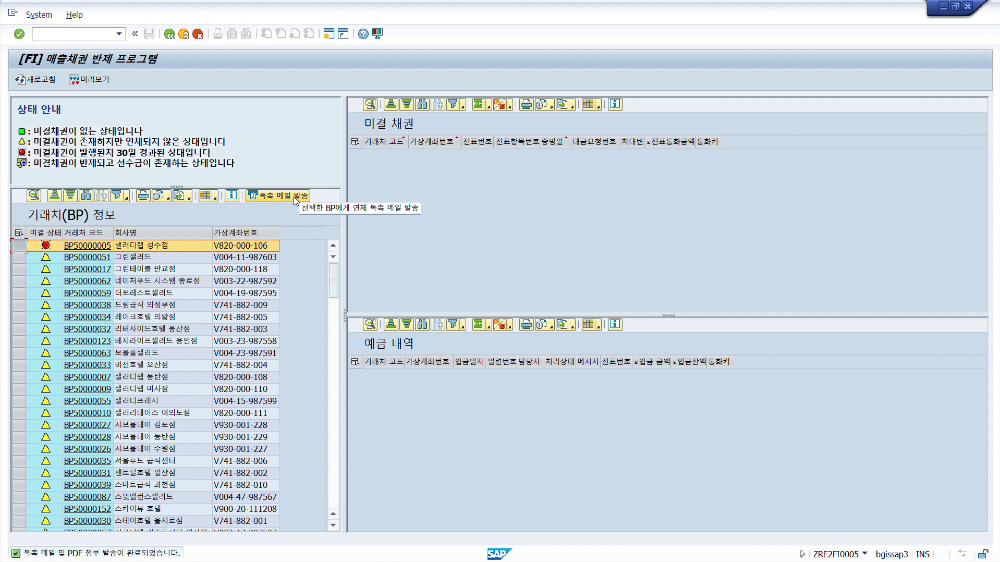
거래처 목록에서 연체 고객을 선택해 독촉 메일을 발송합니다.
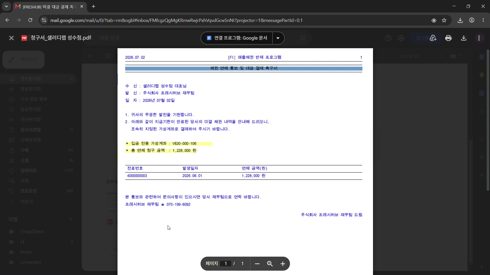
메일에 첨부된 PDF에서 전표별 연체 내역과 금액을 확인합니다.
관련 구현
TRY.
DATA(lo_send_request) = cl_bcs=>create_persistent( ).
lv_subject = |[FRESHUB] 미결 대금 결제 촉구 안내 (문서번호: { lv_spono })|.
DATA(lo_document) = cl_document_bcs=>create_document(
i_type = 'HTM'
i_subject = lv_subject
i_text = lt_body ).
IF lt_solix IS NOT INITIAL.
DATA: lv_att_sub TYPE so_obj_des.
lv_att_sub = |청구서_{ ls_bp_info-company }.pdf|.
lo_document->add_attachment(
EXPORTING
i_attachment_type = 'PDF'
i_attachment_subject = lv_att_sub
i_attachment_size = lv_pdf_size
i_att_content_hex = lt_solix ).
ENDIF.
lo_send_request->set_document( lo_document ).
DATA(lo_recipient) = cl_cam_address_bcs=>create_internet_address( lv_email ).
lo_send_request->add_recipient(
EXPORTING
i_recipient = lo_recipient
i_express = 'X' ).
lo_send_request->set_send_immediately( 'X' ).
lo_send_request->send( ).
COMMIT WORK.
MESSAGE '독촉 메일 및 PDF 첨부 발송이 완료되었습니다.' TYPE 'S'.
CATCH cx_bcs INTO DATA(lx_bcs).
DATA(lv_err_msg) = lx_bcs->get_text( ).
MESSAGE lv_err_msg TYPE 'E' DISPLAY LIKE 'I'.
ENDTRY.채권 또는 예금의 전표번호를 누르면 전표 조회 프로그램으로 연결됩니다. 전표 헤더·아이템을 확인하고 관련 대금청구문서를 팝업으로 조회합니다.
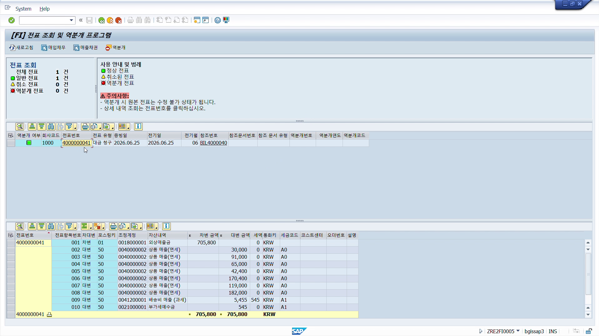
반제 화면의 전표번호에서 전표 조회 프로그램으로 이동한 결과입니다.

미결채권 그리드의 전표번호로 해당 전표를 조회합니다.
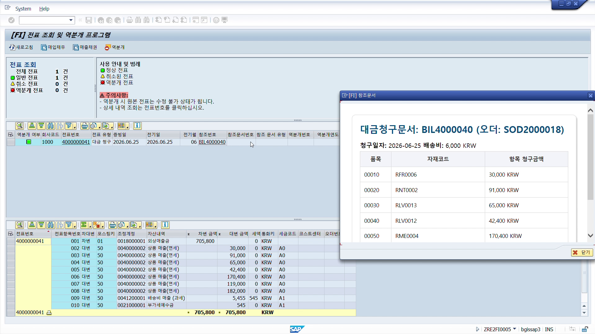
참조문서를 통해 전표의 원인이 된 청구 품목을 확인합니다.

예금 내역에 연결된 전표의 계정과 차대변 금액을 확인합니다.
관련 구현
FORM handle_hotspot_posting_ar USING ps_row TYPE lvc_s_row
ps_col TYPE lvc_s_col.
IF ps_row-rowtype IS NOT INITIAL.
EXIT.
ENDIF.
READ TABLE gt_aropen INTO gs_aropen INDEX ps_row-index.
IF sy-subrc NE 0.
EXIT.
ENDIF.
DATA(lv_prefix) = gs_aropen-belnr+0(2).
IF ps_col-fieldname = 'BELNR'.
CASE lv_prefix.
WHEN '10'.
SUBMIT zre2fi0001
WITH pa_blar = 'SA'
WITH so_beln = gs_aropen-belnr
AND RETURN.
WHEN '14'.
SUBMIT zre2fi0001
WITH pa_blar = 'DZ'
WITH so_beln = gs_aropen-belnr
AND RETURN.
WHEN '15'.
SUBMIT zre2fi0001
WITH pa_blar = 'DZ'
WITH so_beln = gs_aropen-belnr
AND RETURN.
WHEN '18'.
SUBMIT zre2fi0001
WITH pa_blar = 'DR'
WITH so_beln = gs_aropen-belnr
AND RETURN.
WHEN '30'.
SUBMIT zre2fi0001
WITH pa_blar = 'CO'
WITH so_beln = gs_aropen-belnr
AND RETURN.
WHEN '40'.
SUBMIT zre2fi0001
WITH pa_blar = 'RV'
WITH so_beln = gs_aropen-belnr
AND RETURN.
WHEN '49'.
SUBMIT zre2fi0001
WITH pa_blar = 'WA'
WITH so_beln = gs_aropen-belnr
AND RETURN.
WHEN '50'.
SUBMIT zre2fi0001
WITH pa_blar = 'WE'
WITH so_beln = gs_aropen-belnr
AND RETURN.
WHEN '51'.
SUBMIT zre2fi0001
WITH pa_blar = 'RE'
WITH so_beln = gs_aropen-belnr
AND RETURN.
ENDCASE.
ENDIF.
IF sy-subrc NE 0.
EXIT.
ENDIF.
ENDFORM.전체·일반·역분개 전표를 구분하고 전표 유형과 기간으로 조회합니다. 헤더에서 전표를 선택하면 아래 그리드에 아이템이 표시되어 계정과 차대변 금액을 확인할 수 있습니다.

상단 목록에서 선택한 전표의 계정별 금액을 하단에 표시합니다.

전표 유형과 조회 기간, 전체전표 모드를 지정합니다.

일반전표 모드에서 자재 출고 전표를 조회합니다.

조회한 아이템의 차변·대변 합계를 확인합니다.
관련 구현
FORM hotspot_col USING pv_bukrs
pv_gjahr
pv_postnum
pv_rev_mark TYPE mark.
DATA : pv_orgn_belnr TYPE zte2fi0002-belnr.
CLEAR : gs_item.
REFRESH : gt_item.
IF pv_rev_mark IS NOT INITIAL.
PERFORM get_rev USING pv_bukrs pv_gjahr pv_postnum
CHANGING pv_orgn_belnr.
ENDIF.
SELECT a~waers
b~belnr b~buzei b~shkzg b~bschl b~hkont b~wrbtr b~wmwst b~mwskz b~kostl b~aufnr
c~txt50
INTO CORRESPONDING FIELDS OF TABLE gt_item
FROM zte2fi0002 AS a
INNER JOIN zte2fi0003 AS b
ON a~belnr = b~belnr
AND a~bukrs = b~bukrs
AND a~gjahr = b~gjahr
LEFT OUTER JOIN zte2fi0001 AS c
ON b~hkont = c~saknr
WHERE a~bukrs EQ pv_bukrs
AND a~gjahr EQ pv_gjahr
AND ( b~belnr EQ pv_postnum
OR b~belnr EQ pv_orgn_belnr ).
IF sy-subrc NE 0.
MESSAGE s001.
LEAVE LIST-PROCESSING.
ENDIF.
LOOP AT gt_item ASSIGNING FIELD-SYMBOL(<fs_wrbtr>).
CASE <fs_wrbtr>-shkzg.
WHEN 'S'.
<fs_wrbtr>-wrbtr_s = <fs_wrbtr>-wrbtr.
<fs_wrbtr>-shkzg_txt = '차변'.
WHEN 'H'.
<fs_wrbtr>-wrbtr_h = <fs_wrbtr>-wrbtr.
<fs_wrbtr>-shkzg_txt = '대변'.
ENDCASE.
ENDLOOP.
SORT gt_item BY belnr ASCENDING buzei ASCENDING.
CALL METHOD gcl_grid_item->refresh_table_display
EXPORTING
is_stable = gs_stable.
ENDFORM.판매오더와 자재이동문서의 번호를 누르면 관련 내역이 팝업으로 표시됩니다. 전표가 발생한 업무 기록을 같은 화면에서 추적합니다.
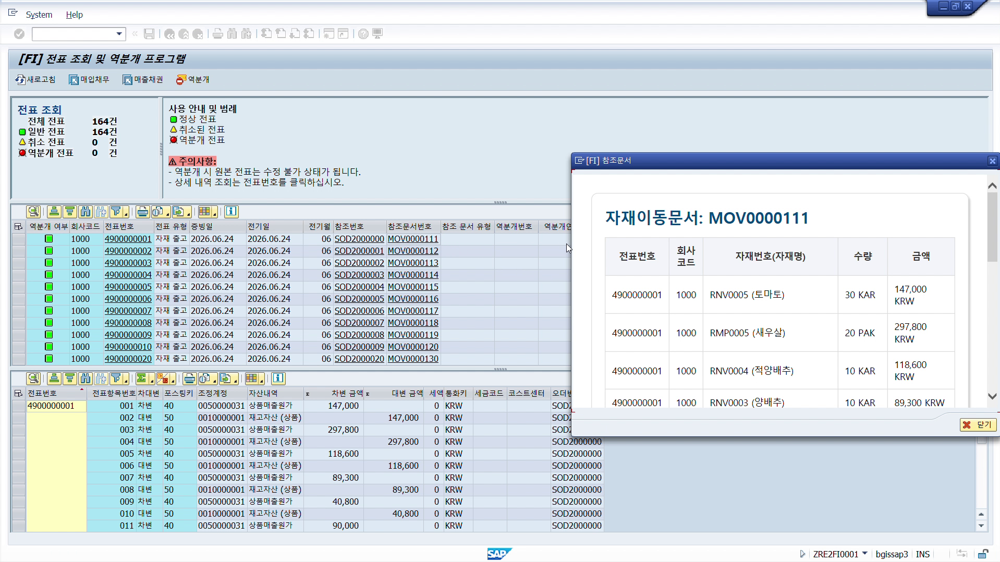
참조문서번호로 해당 자재 이동의 품목·수량·금액을 확인합니다.

참조번호로 전표와 연결된 판매오더의 품목을 조회합니다.
관련 구현
FORM handle_hotspot USING ps_row TYPE lvc_s_row
ps_col TYPE lvc_s_col.
DATA : lt_matmov TYPE ztte2fi0002,
ls_matmov LIKE LINE OF lt_matmov,
ls_refsod TYPE zcds_e2_fi_0004,
lt_refsod LIKE TABLE OF ls_refsod,
ls_refprd TYPE zcds_e2_fi_0005,
lt_refprd LIKE TABLE OF ls_refprd,
lv_prefix(3).
CLEAR : ls_matmov, lv_prefix, ls_refsod.
REFRESH : lt_matmov, lt_refsod.
IF ps_row-rowtype IS NOT INITIAL.
EXIT.
ENDIF.
READ TABLE gt_header INTO gs_header INDEX ps_row-index.
IF sy-subrc NE 0.
EXIT.
ENDIF.
CASE ps_col-fieldname.
WHEN 'BELNR'.
PERFORM hotspot_col USING gs_header-bukrs
gs_header-gjahr
gs_header-belnr
' '.
WHEN 'STBLG'.
IF gs_header-stblg IS NOT INITIAL.
PERFORM hotspot_col USING gs_header-bukrs
gs_header-gjahr
gs_header-stblg
'X'.
ENDIF.
WHEN 'LFBNR'. " 자재이동문서 팝업 (프로그램명이 ZRE2FI0007이라 가정)
CLEAR lv_prefix.
lv_prefix = gs_header-lfbnr+0(3). " 첫번째로부터 3글자 길이
CASE lv_prefix.
WHEN 'MOV'.
gv_popup_mode = 'M'.
PERFORM hotspot_mm USING gs_header-bukrs
gs_header-gjahr
gs_header-lfbnr
CHANGING lt_matmov.
PERFORM html_popup USING lt_matmov ls_matmov.
ENDCASE.
WHEN 'XBLNR'. " 참조문서 팝업
CLEAR lv_prefix.
lv_prefix = gs_header-xblnr(3).
CASE lv_prefix.
WHEN 'SOD'. " 판매오더 문서
gv_popup_mode = 'S'.
PERFORM hotspot_sod USING gs_header-bukrs
gs_header-gjahr
gs_header-xblnr.
WHEN 'PRD'. " 생산오더
gv_popup_mode = 'P'.
PERFORM hotspot_prd USING gs_header-bukrs
gs_header-gjahr
gs_header-xblnr.
WHEN 'BIL'. " 대금청구
gv_popup_mode = 'B'.
PERFORM hotspot_bil USING gs_header-xblnr.
WHEN 'RCT'. " 매출채권 반제 (영수증)
gv_popup_mode = 'R'.
PERFORM hotspot_rct USING gs_header-belnr
gs_header-xblnr.
ENDCASE.
ENDCASE.
IF sy-subrc NE 0.
EXIT.
ENDIF.
ENDFORM.선택한 전표를 확인 후 역분개하고 원본·역분개 전표를 함께 추적합니다. 취소된 원본과 새 역분개 전표는 서로 다른 상태 아이콘으로 구분하며, 소계와 합계로 차대변 금액을 비교합니다.
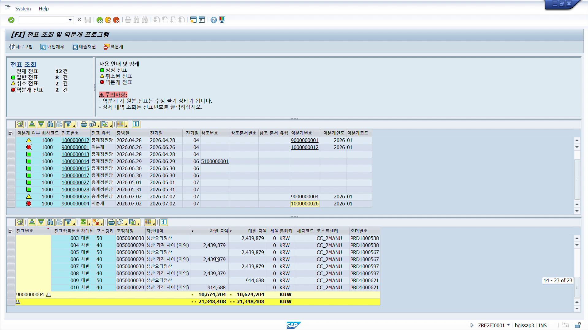
역분개 전표번호를 눌러 연결된 아이템을 함께 조회하고 소계·합계를 비교합니다.

선택한 전표의 역분개 여부를 확인하는 팝업입니다.
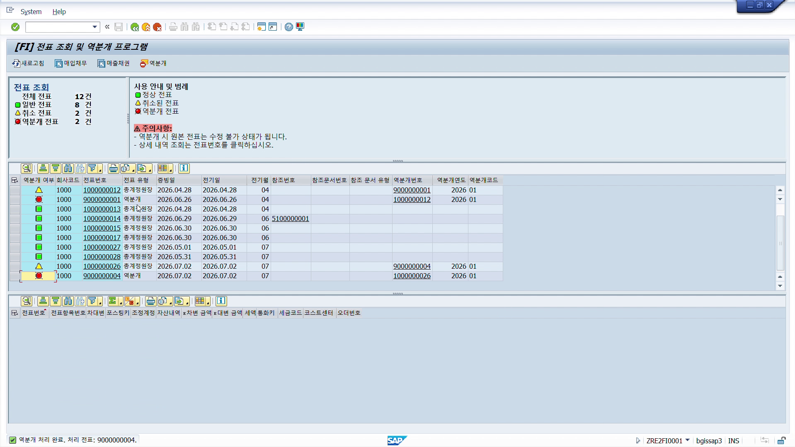
생성된 역분개 전표와 처리 메시지를 확인합니다.
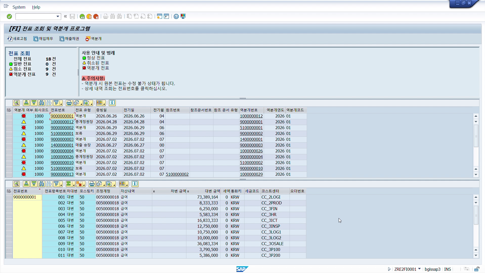
취소된 원본은 노란색, 역분개 전표는 빨간색 아이콘으로 구분됩니다.

원본과 역분개 전표의 연결 관계 및 차대변 금액을 검토합니다.
관련 구현
FORM execute_reversal USING ps_header LIKE gs_header.
DATA : lv_fi_belnr TYPE zte2fi0002-belnr, " 전표번호
lt_fi_head TYPE TABLE OF zte2fi0002, " DB INSERT용 플랫 테이블
lt_fi_item TYPE TABLE OF zte2fi0003, " DB INSERT용 플랫 테이블
lt_docs TYPE gtt_fi_doc, " 딥 테이블
ls_docs TYPE zse2fi0004,
ls_header LIKE gs_header,
ls_rev_header TYPE zte2fi0002,
lt_rev_item TYPE TABLE OF zte2fi0003.
CLEAR : lv_fi_belnr, ls_header, ls_rev_header.
REFRESH : lt_fi_head, lt_fi_item, lt_docs.
MOVE-CORRESPONDING ps_header TO ls_rev_header.
ls_rev_header-blart = 'CA'.
ls_rev_header-bldat = sy-datum.
ls_rev_header-budat = sy-datum.
ls_rev_header-stblg = ps_header-belnr.
ls_rev_header-stjah = ps_header-gjahr.
ls_rev_header-stgrd = '01'. " 사유 (당기 역분개)
ls_rev_header-xreversal = '1'. " 역분개를 실행하는 전표이므로 1
MOVE-CORRESPONDING ls_rev_header TO ls_docs-header.
SELECT belnr bukrs gjahr buzei bschl hkont wrbtr shkzg zlsch
mwskz wmwst koart anln1 anln2 ktosl sgtxt matnr aufnr kostl
INTO CORRESPONDING FIELDS OF TABLE lt_rev_item
FROM zte2fi0003
WHERE bukrs EQ ls_rev_header-bukrs
AND gjahr EQ ls_rev_header-gjahr
AND belnr EQ ls_rev_header-belnr.
IF sy-subrc NE 0.
MESSAGE s000 WITH '역분개 에러' DISPLAY LIKE 'E'.
EXIT.
ENDIF.
MOVE-CORRESPONDING lt_rev_item TO ls_docs-items.
APPEND ls_docs TO lt_docs.
CALL METHOD zcl_e2_fi_posting=>create_fi_multi_document
EXPORTING
iv_wrttp = '04'
IMPORTING
ev_last_belnr = lv_fi_belnr
et_fi_head = lt_fi_head
et_fi_item = lt_fi_item
ev_subrc = DATA(lv_subrc)
ev_commit = DATA(lv_mtd_commit)
CHANGING
ct_docs = lt_docs.
IF lv_subrc NE 0.
MESSAGE s000 WITH '역분개 에러' DISPLAY LIKE 'E'.
EXIT.
ENDIF.
IF lv_mtd_commit IS NOT INITIAL.
MESSAGE s000 WITH |역분개 처리 완료. 처리 전표: { lv_fi_belnr }.|.
COMMIT WORK AND WAIT.
gv_last_rev_belnr = lv_fi_belnr.
ELSE.
MESSAGE s000 WITH |역분개 처리 실패.|.
ROLLBACK WORK.
ENDIF.
ENDFORM.FORM set_rev_scroll .
DATA : ls_row_id TYPE lvc_s_row,
ls_column_id TYPE lvc_s_col,
ls_row_no TYPE lvc_s_roid.
READ TABLE gt_header TRANSPORTING NO FIELDS WITH KEY belnr = gv_last_rev_belnr.
IF sy-subrc EQ 0.
ls_row_id-index = sy-tabix.
CALL METHOD gcl_grid_header->set_current_cell_via_id
EXPORTING
is_row_id = ls_row_id
is_column_id = ls_column_id
is_row_no = ls_row_no.
ENDIF.
CLEAR gv_last_rev_belnr.
ENDFORM.FORM set_sort_item .
REFRESH gt_sort.
CLEAR gs_sort.
gs_sort-fieldname = 'BELNR'. " 기준 필드
gs_sort-up = 'X'. " 오름차순
gs_sort-subtot = 'X'. " 소계(Subtotal) 활성화
APPEND gs_sort TO gt_sort.
ENDFORM.입금 FI0012 → 미결채권 FI0006 → 반제채권 FI0008 / 전표 헤더·아이템 FI0002·0003
전표 조회·역분개는 독립 대표 사례가 아닌 후속 확인·정정 경로입니다.발생한 비용을 계산하고 전표·집계와 조회 화면으로 연결합니다.
내용연수와 비망가액으로 감가상각비를 계산하고, 자산 유형의 계정 결정 룰을 적용합니다. 테스트 실행으로 계산 결과를 먼저 확인합니다.
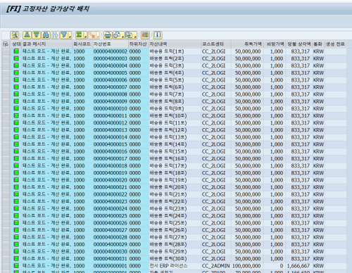
계산 결과와 비용·누계액 계정이 표시된 테스트 모드 화면입니다.
관련 구현
FORM calculate_depreciation .
DATA: lv_total_months TYPE i,
lv_dep_amt TYPE zte2fi0003-wrbtr.
REFRESH gt_alv.
LOOP AT gt_fixed_asset INTO DATA(ls_asset).
CLEAR: lv_total_months, lv_dep_amt.
lv_total_months = ( ls_asset-ndjar * 12 ) + ls_asset-ndper.
IF lv_total_months > 0 AND ls_asset-answt > ls_asset-schrw.
lv_dep_amt = ( ls_asset-answt - ls_asset-schrw ) / lv_total_months.
ENDIF.
IF lv_dep_amt > 0.
gs_alv-status = icon_led_green.
gs_alv-bukrs = ls_asset-bukrs.
gs_alv-anln1 = ls_asset-anln1.
gs_alv-anln2 = ls_asset-anln2.
gs_alv-txt50 = ls_asset-txt50.
gs_alv-kostl = ls_asset-kostl.
gs_alv-answt = ls_asset-answt.
gs_alv-schrw = ls_asset-schrw.
gs_alv-dep_amt = lv_dep_amt.
gs_alv-waers = ls_asset-waers.
READ TABLE gt_rule INTO DATA(ls_acct_det) WITH KEY ktogr = ls_asset-ktogr.
IF sy-subrc = 0.
gs_alv-hkont_exp = ls_acct_det-ktafb. " 감가상각비 계정
gs_alv-hkont_acc = ls_acct_det-ktafa. " 감가상각누계액 계정
ELSE.
gs_alv-message = '오류: 자산 계정 결정 룰 누락(ZTE2FI0013).'.
gs_alv-status = icon_led_red.
APPEND gs_alv TO gt_alv.
CONTINUE. " 계정이 없으면 해당 자산은 상각 전표 생성 제외
ENDIF.
IF p_testrn = 'X'.
gs_alv-message = '테스트 모드 - 계산 완료.'.
ENDIF.
APPEND gs_alv TO gt_alv.
ENDIF.
ENDLOOP.
ENDFORM.자산 트리에서 선택한 주자산·하위자산의 상세와 감가상각 전표 이력을 확인합니다. 차트로 취득가액과 누계액 등을 비교합니다.
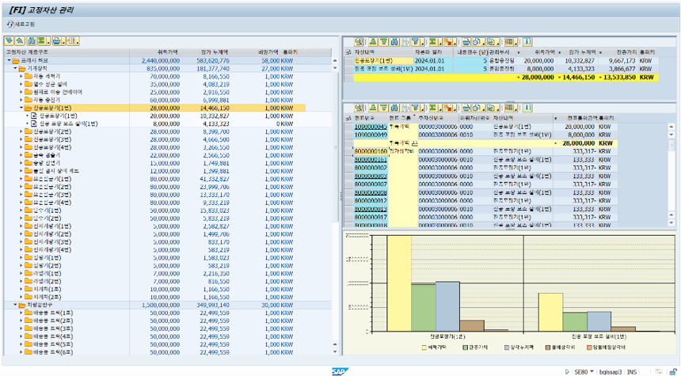
분류별 자산 트리와 상세 그리드, 전표 이력, 차트를 한 화면에 구성했습니다.
관련 구현
FORM get_grid_data USING pv_anln1 TYPE zte2fi0005-anln1
pv_anln2 TYPE zte2fi0005-anln2.
DATA : lr_anln2 TYPE RANGE OF zte2fi0005-anln2,
ls_anln2 LIKE LINE OF lr_anln2.
CLEAR : ls_anln2.
REFRESH : lr_anln2.
IF pv_anln2 IS NOT INITIAL.
ls_anln2-low = pv_anln2.
ls_anln2-sign = 'I'.
ls_anln2-option = 'EQ'.
APPEND ls_anln2 TO lr_anln2.
ENDIF.
SELECT a~txt50, a~aktiv, a~answt, a~knafa, a~waers,
a~ndjar, ( a~answt - a~knafa ) AS rests,
b~ktext
FROM zte2fi0005 AS a
LEFT OUTER JOIN ZTE2co0002 AS b
ON a~kostl = b~kostl
WHERE anln1 EQ @pv_anln1
AND anln2 IN @lr_anln2
INTO CORRESPONDING FIELDS OF TABLE @gt_grid.
IF sy-subrc NE 0.
MESSAGE s000 WITH |해당 고정자산의 세부 데이터가 존재하지 않습니다.| DISPLAY LIKE 'E'.
EXIT.
ENDIF.
CALL METHOD gcl_grid->refresh_table_display
EXPORTING
is_stable = gs_stable
i_soft_refresh = space.
ENDFORM.직원 데이터를 코스트센터별로 모아 인원과 급여액을 집계하고, 테스트 결과 확인 후 전표 처리로 연결합니다.
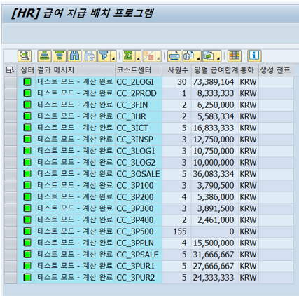
코스트센터별 사원 수와 급여 합계가 표시됩니다.
관련 구현
FORM calculate_payroll.
DATA: lv_monthly TYPE p DECIMALS 2.
REFRESH: gt_dept_sum, gt_alv.
SORT gt_employee BY kostl.
LOOP AT gt_employee INTO DATA(ls_emp).
lv_monthly = ls_emp-ansal / 1200.
READ TABLE gt_dept_sum ASSIGNING FIELD-SYMBOL(<fs_sum>) WITH KEY kostl = ls_emp-kostl.
IF sy-subrc = 0.
<fs_sum>-total_amt = <fs_sum>-total_amt + lv_monthly.
<fs_sum>-emp_cnt = <fs_sum>-emp_cnt + 1.
ELSE.
APPEND INITIAL LINE TO gt_dept_sum ASSIGNING <fs_sum>.
<fs_sum>-kostl = ls_emp-kostl.
<fs_sum>-waers = ls_emp-waers.
<fs_sum>-total_amt = lv_monthly.
<fs_sum>-emp_cnt = 1.
ENDIF.
ENDLOOP.
LOOP AT gt_dept_sum INTO DATA(ls_sum).
gs_alv-status = icon_led_green.
gs_alv-kostl = ls_sum-kostl.
gs_alv-emp_cnt = ls_sum-emp_cnt.
gs_alv-total_amt = ls_sum-total_amt.
gs_alv-waers = ls_sum-waers.
IF p_testrn = 'X'.
gs_alv-message = '테스트 모드 - 계산 완료'.
ENDIF.
APPEND gs_alv TO gt_alv.
ENDLOOP.
ENDFORM.배부 과정을 확인하고, 검토한 결과를 결산으로 연결합니다.
코스트센터와 SKF를 준비하고 센더·리시버 규칙에 따라 비용을 배부합니다. 결과 금액뿐 아니라 각 단계의 기준과 누적 금액을 확인하도록 구성했습니다.
통계 지표의 코드·명칭·단위를 등록하고 조회·삭제합니다. 면적(AREA), 시간(HOURS), 컴퓨터 대수(COMP), 직원 수(EMP) 등 비용 배부의 기준을 관리합니다.
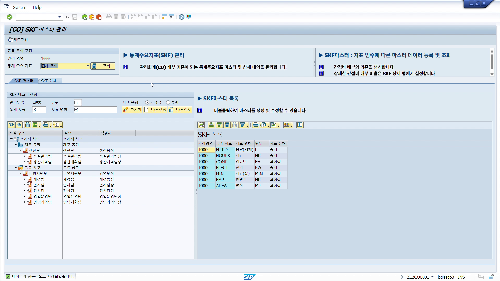
AREA 지표와 M2 단위를 등록한 뒤 SKF 목록에서 결과를 확인합니다.
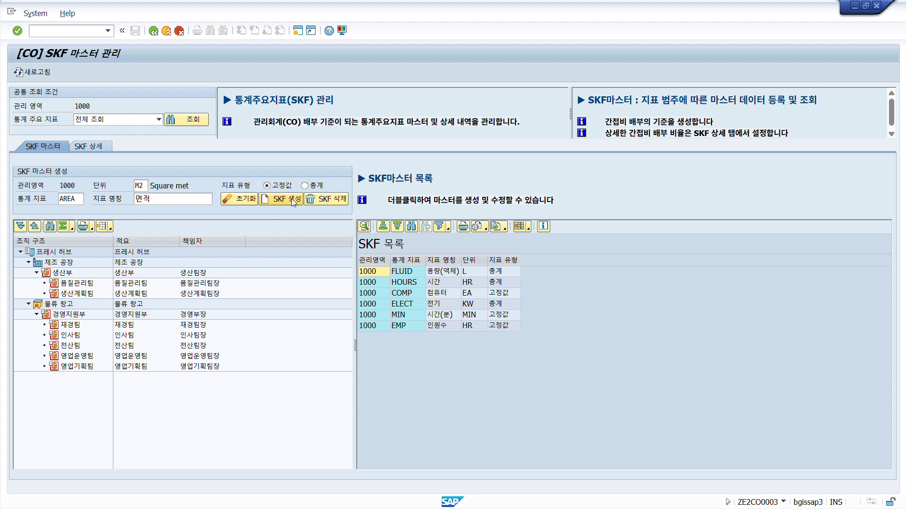
통계 지표 AREA, 지표 명칭 면적, 단위 M2를 입력합니다.

선택한 지표를 삭제한 뒤 목록의 변화를 확인합니다.
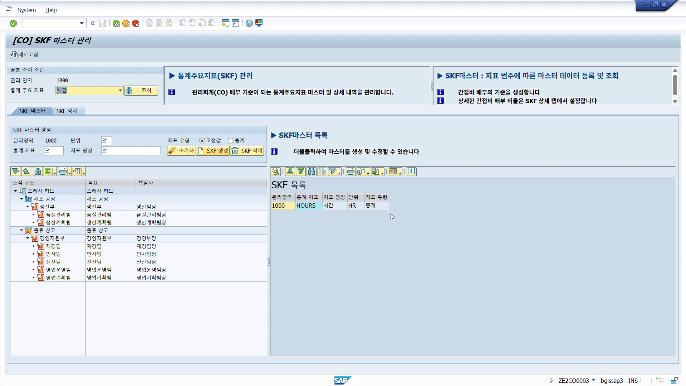
시간을 검색하면 HOURS 지표가 조회됩니다.
관련 구현
FORM set_skf_ma .
DATA : ls_save TYPE zte2co0011.
CLEAR ls_save.
IF gs_skfma-kokrs IS INITIAL OR
gs_skfma-stagr IS INITIAL.
MESSAGE s000 WITH TEXT-m01 DISPLAY LIKE 'E'.
EXIT.
ENDIF.
CASE 'X'.
WHEN grb_fixed.
gs_skfma-stgbz = '1'. " 고정값 저장
WHEN grb_total.
gs_skfma-stgbz = '2'. " 총계값 저장
ENDCASE.
MOVE-CORRESPONDING gs_skfma TO ls_save.
IF ls_save-erdat IS INITIAL.
ls_save-erdat = sy-datum.
ls_save-erzet = sy-uzeit.
ls_save-ernam = sy-uname.
ELSE.
ls_save-aedat = sy-datum.
ls_save-aezet = sy-uzeit.
ls_save-aenam = sy-uname.
ENDIF.
MODIFY zte2co0011 FROM ls_save.
IF sy-dbcnt > 0.
COMMIT WORK AND WAIT.
PERFORM get_data_ma.
PERFORM refresh_ma.
MESSAGE s002.
ENDIF.
PERFORM clear_ma.
ENDFORM.FORM del_skf_ma .
READ TABLE gt_skfma INTO DATA(ls_skfma) WITH KEY kokrs = gs_skfma-kokrs
stagr = gs_skfma-stagr.
IF sy-subrc NE 0.
MESSAGE s000 WITH TEXT-m03 DISPLAY LIKE 'E'.
EXIT.
ENDIF.
DELETE FROM zte2co0011 WHERE kokrs EQ ls_skfma-kokrs
AND stagr EQ ls_skfma-stagr.
IF sy-subrc EQ 0.
COMMIT WORK AND WAIT.
MESSAGE s003.
ELSE.
ROLLBACK WORK.
MESSAGE s005 DISPLAY LIKE 'E'.
ENDIF.
PERFORM refresh_ma.
PERFORM clear_ma.
ENDFORM.마스터와 실적 탭을 오가도 검색 조건을 유지합니다. 좌측 트리에서 코스트센터와 월별 실적을 살펴보고, 선택한 코스트센터의 SKF 내역을 우측 그리드에서 확인합니다.
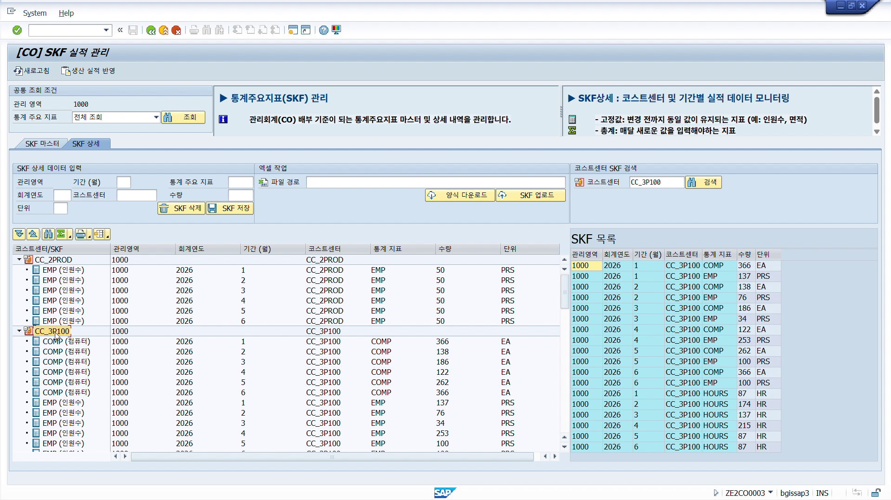
좌측에서 선택한 코스트센터의 지표별 실적이 우측 목록에 표시됩니다.
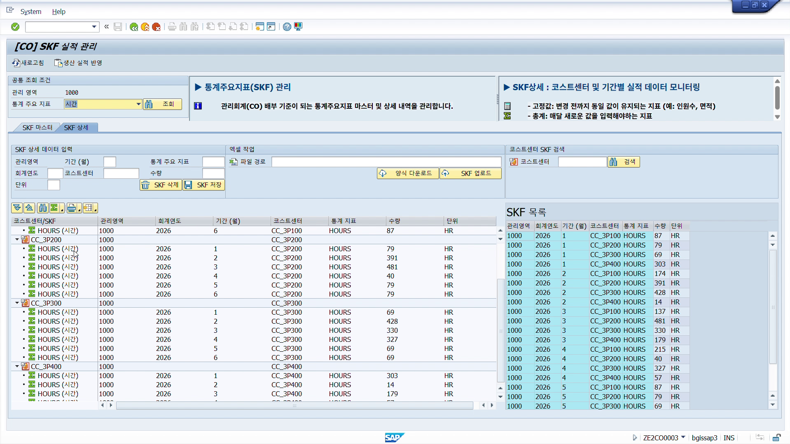
마스터에서 검색한 시간 조건이 실적 탭에서도 유지됩니다.

전체 조회로 전환해 코스트센터·지표·월별 실적을 함께 확인합니다.
관련 구현
FORM tree_double_click USING pv_node_key TYPE tv_nodekey
pv_fieldname TYPE lvc_fname
CHANGING ps_tree LIKE gs_skftr.
CALL METHOD gcl_tree_tr->get_outtab_line
EXPORTING
i_node_key = pv_node_key
IMPORTING
e_outtab_line = ps_tree.
gv_findkos = ps_tree-kostl.
gs_sel-stagr = ps_tree-stagr.
IF ps_tree-kostl IS INITIAL.
MESSAGE s000 WITH '존재하지 않는 코스트센터입니다.' DISPLAY LIKE 'E'.
EXIT.
ELSE.
PERFORM set_grid_kostl.
PERFORM refresh_tr.
PERFORM get_data_tr.
PERFORM set_grid_kostl.
PERFORM refresh_tr.
PERFORM gv_mark.
ENDIF.
IF ps_tree-node_level < 2.
CLEAR ps_tree.
IF gv_mark IS INITIAL.
MESSAGE s000 WITH TEXT-m10.
EXIT.
ENDIF.
ENDIF.
ENDFORM.연도와 기간으로 PP 생산 실적을 조회해 코스트센터별 작업시간을 집계합니다. 확인 팝업에서 검토한 후 SKF 실적에 반영하고 월별 목록에서 결과를 확인합니다. PP 데이터는 다른 팀원이 구현한 생산 업무와의 연계 대상입니다.
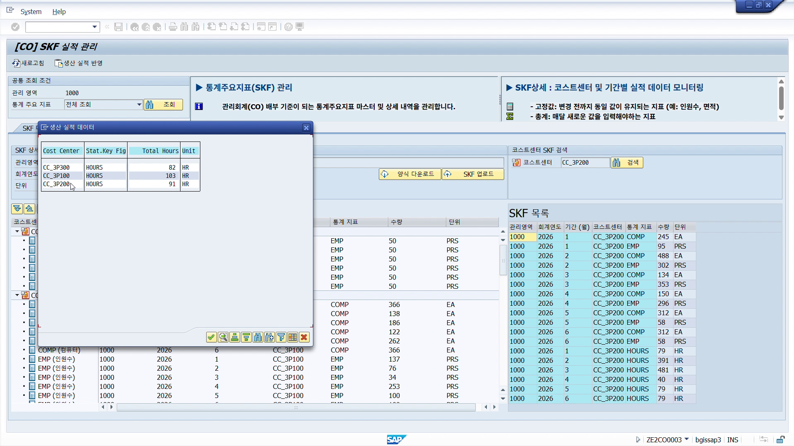
2026년 6월의 생산 실적을 코스트센터별 HOURS 값으로 집계한 팝업입니다.

생산 실적을 가져올 연도와 월을 지정합니다.
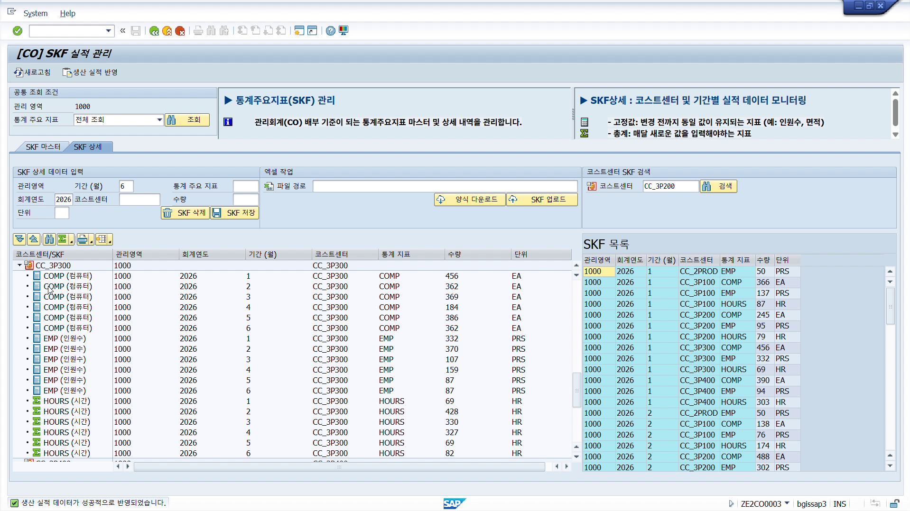
확인 후 SKF 실적 목록과 처리 메시지를 확인합니다.
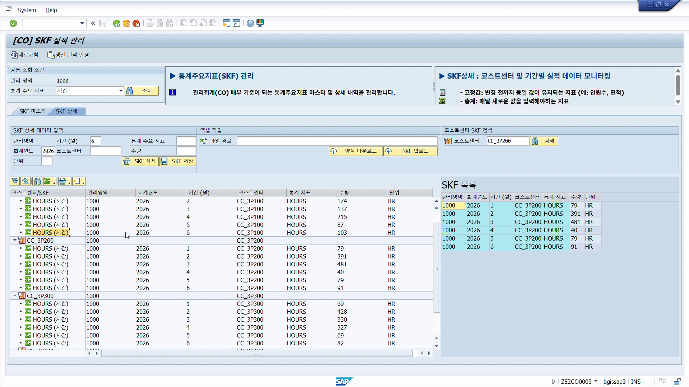
월별 트리와 상세 목록에서 생성된 6월 실적을 확인합니다.
관련 구현
FORM pull_pp_data .
DATA: lv_budat_from TYPE zte2pp0011-iedd,
lv_budat_to TYPE zte2pp0011-iedd.
DATA: lt_sval TYPE TABLE OF sval,
ls_sval TYPE sval.
DATA: lv_returncode TYPE c.
CLEAR ls_sval.
ls_sval-tabname = 'ZTE2CO0012'.
ls_sval-fieldname = 'GJAHR'.
ls_sval-field_obl = 'X'.
APPEND ls_sval TO lt_sval.
CLEAR ls_sval.
ls_sval-tabname = 'ZTE2CO0012'.
ls_sval-fieldname = 'PERIO'.
ls_sval-field_obl = 'X'.
APPEND ls_sval TO lt_sval.
CALL FUNCTION 'POPUP_GET_VALUES'
EXPORTING
popup_title = 'PP 생산실적 가져오기'
IMPORTING
returncode = lv_returncode
TABLES
fields = lt_sval
EXCEPTIONS
error_in_fields = 1
OTHERS = 2.
IF sy-subrc <> 0 OR lv_returncode = 'A'.
MESSAGE s000 WITH '취소되었습니다.' DISPLAY LIKE 'S'.
EXIT.
ENDIF.
READ TABLE lt_sval INTO ls_sval WITH KEY fieldname = 'GJAHR'.
gs_skftr-gjahr = ls_sval-value.
READ TABLE lt_sval INTO ls_sval WITH KEY fieldname = 'PERIO'.
DATA(lv_month) = CONV i( ls_sval-value ).
gs_skftr-perio = |{ lv_month WIDTH = 3 ALIGN = RIGHT PAD = '0' }|.
lv_budat_from = |{ gs_skftr-gjahr }{ lv_month WIDTH = 2 ALIGN = RIGHT PAD = '0' }01|.
CALL FUNCTION 'RP_LAST_DAY_OF_MONTHS'
EXPORTING
day_in = lv_budat_from
IMPORTING
last_day_of_month = lv_budat_to
EXCEPTIONS
day_in_no_date = 1
OTHERS = 2.
SELECT d~kostl AS kostl,
SUM( a~ismnw ) AS msgfb
INTO TABLE @DATA(lt_sum)
FROM zte2pp0011 AS a
INNER JOIN zte2pp0009 AS b ON a~aufnr = b~aufnr
INNER JOIN zte2pp0005 AS c ON b~plnnr = c~plnnr AND a~vornr = c~vornr
INNER JOIN zte2pp0001 AS d ON c~arbpl = d~arbpl
WHERE a~iedd BETWEEN @lv_budat_from AND @lv_budat_to
AND d~kostl IS NOT NULL
GROUP BY d~kostl.
IF sy-subrc <> 0.
MESSAGE s000 WITH '해당 기간의 PP 실적 데이터가 없습니다.'.
EXIT.
ENDIF.
DATA: lt_popup_data LIKE TABLE OF gs_skftr,
ls_popup LIKE gs_skftr.
DATA: lv_default_kokrs TYPE zte2co0012-kokrs.
lv_default_kokrs = gs_sel-kokrs.
IF lv_default_kokrs IS INITIAL.
lv_default_kokrs = 'E200'.
ENDIF.
LOOP AT lt_sum INTO DATA(ls_sum).
CLEAR ls_popup.
ls_popup-kokrs = lv_default_kokrs.
ls_popup-gjahr = gs_skftr-gjahr.
ls_popup-perio = gs_skftr-perio.
ls_popup-kostl = ls_sum-kostl.
ls_popup-stagr = 'HOURS'.
ls_popup-msgfb = ls_sum-msgfb / 60.
ls_popup-meins = 'H'.
APPEND ls_popup TO lt_popup_data.
READ TABLE gt_skftr ASSIGNING FIELD-SYMBOL(<fs_skftr>)
WITH KEY kokrs = lv_default_kokrs
gjahr = gs_skftr-gjahr
perio = gs_skftr-perio
kostl = ls_sum-kostl
stagr = 'HOURS'. " 지표가 HOURS인 건에 대해서만 업데이트
IF sy-subrc = 0.
<fs_skftr>-msgfb = ls_sum-msgfb / 60.
<fs_skftr>-meins = 'H'.
ELSE.
APPEND INITIAL LINE TO gt_skftr ASSIGNING <fs_skftr>.
<fs_skftr>-kokrs = lv_default_kokrs.
<fs_skftr>-gjahr = gs_skftr-gjahr.
<fs_skftr>-perio = gs_skftr-perio.
<fs_skftr>-kostl = ls_sum-kostl.
<fs_skftr>-stagr = 'HOURS'.
<fs_skftr>-msgfb = ls_sum-msgfb / 60.
<fs_skftr>-meins = 'H'.
ENDIF.
ENDLOOP.
gt_skftr_grid = gt_skftr.
DATA: lt_fcat TYPE slis_t_fieldcat_alv,
ls_fcat TYPE slis_fieldcat_alv,
lv_exit TYPE c.
CLEAR ls_fcat. ls_fcat-fieldname = 'KOSTL'. ls_fcat-seltext_m = 'Cost Center'. ls_fcat-tabname = '1'. ls_fcat-outputlen = 12. APPEND ls_fcat TO lt_fcat.
CLEAR ls_fcat. ls_fcat-fieldname = 'STAGR'. ls_fcat-seltext_m = 'Stat.Key Fig'. ls_fcat-tabname = '1'. ls_fcat-outputlen = 12. APPEND ls_fcat TO lt_fcat.
CLEAR ls_fcat. ls_fcat-fieldname = 'MSGFB'. ls_fcat-seltext_m = 'Total Hours'. ls_fcat-tabname = '1'. ls_fcat-outputlen = 15. APPEND ls_fcat TO lt_fcat.
CLEAR ls_fcat. ls_fcat-fieldname = 'MEINS'. ls_fcat-seltext_m = 'Unit'. ls_fcat-tabname = '1'. ls_fcat-outputlen = 5. APPEND ls_fcat TO lt_fcat.
CALL FUNCTION 'REUSE_ALV_POPUP_TO_SELECT'
EXPORTING
i_title = 'PP Actual Data (Click [V] to Save)'
i_selection = ' '
i_zebra = 'X'
i_tabname = '1'
i_screen_start_column = 10
i_screen_start_line = 5
i_screen_end_column = 90
i_screen_end_line = 20
it_fieldcat = lt_fcat
IMPORTING
e_exit = lv_exit
TABLES
t_outtab = lt_popup_data
EXCEPTIONS
program_error = 1
OTHERS = 2.
IF sy-subrc = 0 AND lv_exit IS INITIAL.
PERFORM save_data_tr.
PERFORM get_data_tr.
PERFORM get_data_trg.
PERFORM refresh_tr.
IF gcl_tree_tr IS BOUND.
CALL METHOD gcl_tree_tr->delete_all_nodes.
PERFORM build_tree_tr.
CALL METHOD gcl_tree_tr->frontend_update.
ENDIF.
MESSAGE s000 WITH 'PP actual data successfully fetched and saved.'.
ELSE.
MESSAGE s000 WITH 'Save cancelled. (Data applied temporarily)'.
ENDIF.
ENDFORM.관리회계영역·회계연도·기간·금액 유형을 지정합니다. 금액 유형의 검색 도움말에서 계획·실제를 선택하고, 배부 취소 여부로 실행 모드를 구분합니다.
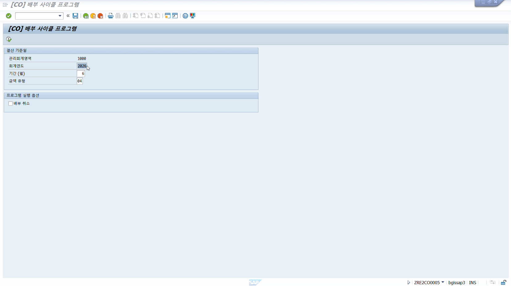
관리회계영역 1000, 2026년 6월, 실제 금액 유형을 선택한 화면입니다.

계획(01)과 실제(04)의 코드와 설명을 함께 확인합니다.
관련 구현
SELECTION-SCREEN BEGIN OF BLOCK bl1 WITH FRAME TITLE TEXT-t01.
PARAMETERS : pa_kokrs TYPE zte2co0016-kokrs DEFAULT '1000',
pa_gjahr TYPE zte2co0016-gjahr DEFAULT '2026',
pa_perio TYPE zte2co0016-perio DEFAULT sy-datum+4(2),
pa_wrttp TYPE zte2co0016-wrttp DEFAULT '04'. " 01: 계획, 04: 실제
SELECTION-SCREEN END OF BLOCK bl1.FORM set_sel_screen .
LOOP AT SCREEN.
CASE screen-name.
WHEN 'PA_KOKRS'.
screen-input = '0'.
screen-display_3d = '0'.
ENDCASE.
MODIFY SCREEN.
ENDLOOP.
ENDFORM.트리에서 센더를 선택하면 센더·리시버·누적 배부액을 함께 확인합니다. 전력비·감가상각비의 SKF 배부와 수도광열비의 고정 비율 배부, 전산팀 비용과 공장장 인건비의 2차 배부를 차례로 살펴봅니다.
HOURS 기준의 리시버별 배부액과 하단 누적 금액을 함께 확인합니다.

실행 전 트리에서 센더·리시버와 배부 기준을 확인합니다.

감가상각비를 HOURS 기준으로 배부하고 누적 금액을 확인합니다.

고정 비율 90%·10%를 적용한 배부액을 비교합니다.

부서별 컴퓨터 대수의 비율(COMP)을 기준으로 전산팀 비용을 배부합니다.

부서별 직원 수의 비율(EMP)을 기준으로 공장장의 인건비를 배부합니다.
관련 구현
FORM simulate_segment USING pv_node_key TYPE lvc_nkey
pv_fieldname TYPE lvc_fname.
DATA : ls_node_data LIKE gs_101_tree.
DATA : lv_value_rule TYPE dd07v-domvalue_l,
lv_text_rule TYPE dd07v-ddtext.
IF pv_node_key IS NOT INITIAL.
CALL METHOD gcl_tree_101l->get_outtab_line
EXPORTING
i_node_key = pv_node_key
IMPORTING
e_outtab_line = ls_node_data
EXCEPTIONS
node_not_found = 1
OTHERS = 2.
IF sy-subrc <> 0.
EXIT.
ENDIF.
ELSE.
READ TABLE gt_101_tree INTO ls_node_data INDEX 1.
IF sy-subrc <> 0.
EXIT.
ENDIF.
ENDIF.
REFRESH gt_sgmt_s.
SELECT a~altyp,
b~kokrs, b~cycle, b~endda, b~segnr, b~snd_kostl, b~snd_kstar, b~al_kstar,
c~ktext AS snd_ktext,
d~ktext AS al_ktext,
k~ktext AS snd_ktext_kostl
FROM zte2co0013 AS a
INNER JOIN zte2co0014 AS b
ON a~kokrs EQ b~kokrs
AND a~cycle EQ b~cycle
LEFT OUTER JOIN zte2co0001 AS c
ON c~kokrs EQ b~kokrs
AND c~kstar EQ b~snd_kstar
LEFT OUTER JOIN zte2co0001 AS d
ON d~kokrs EQ b~kokrs
AND d~kstar EQ b~al_kstar
LEFT OUTER JOIN zte2co0002 AS k
ON k~kokrs EQ b~kokrs
AND k~kostl EQ b~snd_kostl
WHERE a~kokrs EQ @pa_kokrs
AND b~cycle EQ @ls_node_data-cycle
AND ( b~segnr EQ @ls_node_data-segnr OR @ls_node_data-segnr IS INITIAL )
INTO CORRESPONDING FIELDS OF TABLE @gt_sgmt_s.
REFRESH gt_sgmt_r.
SELECT a~kokrs, a~cycle, a~endda, a~segnr, a~rcv_kostl, a~rcv_rule, a~stagr, a~perct,
k~ktext AS rcv_ktext_kostl
FROM zte2co0015 AS a
LEFT OUTER JOIN zte2co0002 AS k
ON k~kokrs EQ a~kokrs
AND k~kostl EQ a~rcv_kostl
WHERE a~kokrs EQ @pa_kokrs
AND a~cycle EQ @ls_node_data-cycle
AND ( a~segnr EQ @ls_node_data-segnr OR @ls_node_data-segnr IS INITIAL )
INTO CORRESPONDING FIELDS OF TABLE @gt_sgmt_r.
LOOP AT gt_sgmt_r ASSIGNING FIELD-SYMBOL(<fs_sgmt_r>).
lv_value_rule = <fs_sgmt_r>-rcv_rule.
CALL FUNCTION 'C_DIC_DOMAIN_VALUE_TEXT_READ'
EXPORTING
name = 'ZDE2_CO_RULE'
spras = sy-langu
value = lv_value_rule
IMPORTING
text = lv_text_rule
EXCEPTIONS
not_found = 1
OTHERS = 2.
IF sy-subrc <> 0.
MESSAGE s000 WITH |시스템 에러: 도메인 읽기 오류.|.
EXIT.
ENDIF.
<fs_sgmt_r>-rcv_rule_text = lv_text_rule.
ENDLOOP.
IF gt_sgmt_s[] IS NOT INITIAL.
DATA: lt_snd_rng2 TYPE RANGE OF zte2co0016-kostl,
ls_snd_rng2 LIKE LINE OF lt_snd_rng2.
LOOP AT gt_sgmt_s INTO DATA(ls_sgmt_tmp2).
ls_snd_rng2-sign = 'I'.
ls_snd_rng2-option = 'EQ'.
ls_snd_rng2-low = |{ ls_sgmt_tmp2-snd_kostl ALPHA = IN }|.
COLLECT ls_snd_rng2 INTO lt_snd_rng2.
ENDLOOP.
DATA(lv_perio2) = |{ pa_perio ALPHA = IN }|.
SELECT kokrs, gjahr, perio, kostl, wrttp, wkg00, waers, kstar
FROM zcds_e2_co_0004( p_kokrs = @pa_kokrs, p_wrttp = @pa_wrttp )
WHERE kokrs EQ @pa_kokrs
AND gjahr EQ @pa_gjahr
AND perio EQ @lv_perio2
AND kostl IN @lt_snd_rng2
AND wrttp EQ @pa_wrttp
INTO CORRESPONDING FIELDS OF TABLE @gt_kostl_sum.
LOOP AT gt_sgmt_s ASSIGNING FIELD-SYMBOL(<fs_s>).
<fs_s>-waers = 'KRW'.
LOOP AT gt_kostl_sum INTO DATA(ls_k) WHERE kostl = <fs_s>-snd_kostl.
IF <fs_s>-altyp = '1' AND <fs_s>-snd_kstar IS NOT INITIAL.
DATA(lv_snd_kstar_alpha) = |{ <fs_s>-snd_kstar ALPHA = IN }|.
IF ls_k-kstar = lv_snd_kstar_alpha.
<fs_s>-wkg00 = <fs_s>-wkg00 + ls_k-wkg00.
ENDIF.
ELSE.
<fs_s>-wkg00 = <fs_s>-wkg00 + ls_k-wkg00.
ENDIF.
ENDLOOP.
ENDLOOP.
ENDIF.
REFRESH: gt_skf_tr, gt_allocation.
SELECT kokrs, gjahr, perio, kostl, stagr, msgfb, meins, stgbz
FROM zte2co0012
WHERE kokrs EQ @pa_kokrs
AND gjahr EQ @pa_gjahr
AND perio EQ @pa_perio
INTO CORRESPONDING FIELDS OF TABLE @gt_skf_tr.
PERFORM calculate_allocation.
LOOP AT gt_sgmt_r ASSIGNING FIELD-SYMBOL(<fs_r>).
<fs_r>-waers = 'KRW'.
READ TABLE gt_101_tree INTO DATA(ls_tree)
WITH KEY cycle = <fs_r>-cycle segnr = <fs_r>-segnr rcv_kostl = <fs_r>-rcv_kostl.
IF sy-subrc = 0.
<fs_r>-perct = ls_tree-perct.
ENDIF.
LOOP AT gt_allocation ASSIGNING FIELD-SYMBOL(<fs_a>)
WHERE rcv_kostl = <fs_r>-rcv_kostl
AND cycle = <fs_r>-cycle
AND segnr = <fs_r>-segnr.
<fs_r>-wkg00 = <fs_r>-wkg00 + <fs_a>-wkg00.
<fs_a>-perct = <fs_r>-perct.
ENDLOOP.
ENDLOOP.
IF gcl_grid_101_rtop IS BOUND.
CALL METHOD gcl_grid_101_rtop->refresh_table_display
EXPORTING
is_stable = gs_stable.
ENDIF.
IF gcl_grid_101_rbot IS BOUND.
CALL METHOD gcl_grid_101_rbot->refresh_table_display
EXPORTING
is_stable = gs_stable.
ENDIF.
PERFORM calc_accum_amounts USING ls_node_data-cycle ls_node_data-segnr.
IF gcl_grid_101_rmid IS BOUND.
CALL METHOD gcl_grid_101_rmid->refresh_table_display
EXPORTING
is_stable = gs_stable.
ENDIF.
ENDFORM.lv_diff = ls_kstar-wkg00 - lv_sum_alloc1.
IF lv_diff NE 0.
READ TABLE gt_allocation INTO DATA(ls_adj1) INDEX lv_tabix.
IF sy-subrc = 0.
ls_adj1-wkg00 = ls_adj1-wkg00 + lv_diff.
ls_adj1-message = |배부 성공 (단수차이 조정)|.
MODIFY gt_allocation FROM ls_adj1 INDEX lv_tabix.
READ TABLE gt_kostl_sum ASSIGNING FIELD-SYMBOL(<fs_adj1_sum>)
WITH KEY kokrs = pa_kokrs
kostl = ls_adj1-rcv_kostl
kstar = ls_adj1-snd_kstar.
IF sy-subrc = 0.
<fs_adj1_sum>-wkg00 = <fs_adj1_sum>-wkg00 + lv_diff.
ENDIF.
ENDIF.
ENDIF.전체 배부 결과를 모아 검토하고 선행 결산 단계의 완료 여부를 확인합니다. 시뮬레이션 결과가 표시되어도 배부 단계는 확정 전 상태로 남아 있습니다.
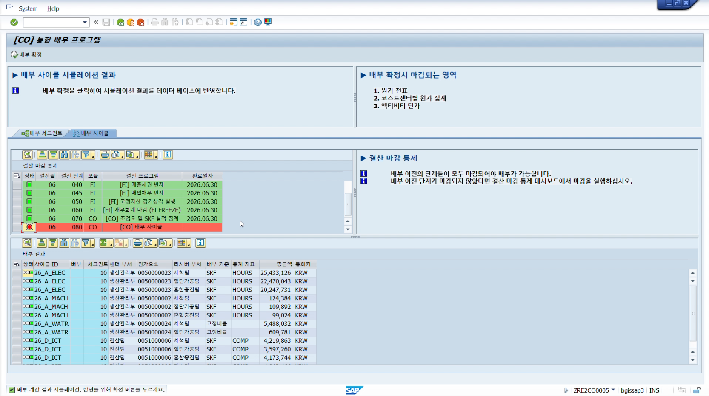
선행 단계는 초록색, 배부 사이클은 빨간색으로 표시되며 하단에는 시뮬레이션 금액이 나타납니다.
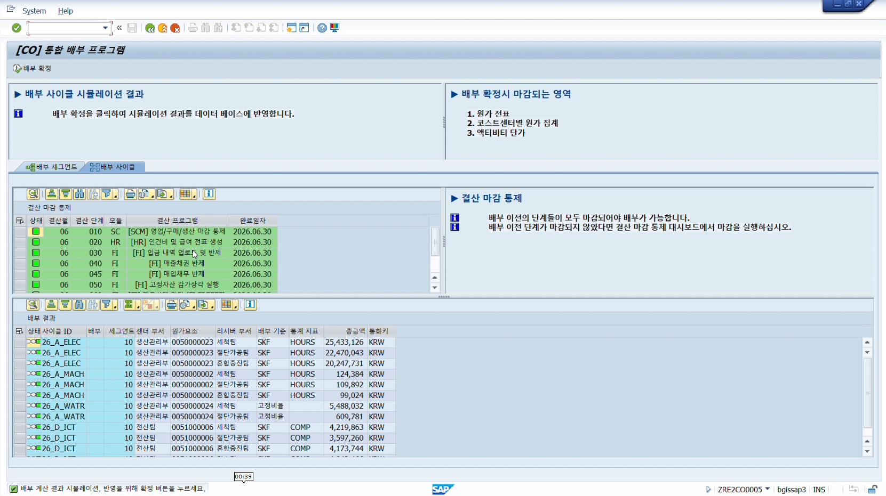
영업·구매·생산, 인건비, 입금·반제 등 선행 단계의 상태를 함께 확인합니다.
관련 구현
MODULE user_command_0100 INPUT.
CASE gv_okcode.
WHEN 'EXEC1'. " 실행
CLEAR gv_okcode.
REFRESH: gt_allocation, gt_kostl_accum.
IF pa_rev = 'X'.
lcl_allocation_engine=>reverse_allocation( iv_kokrs = pa_kokrs ).
ELSE.
lcl_allocation_engine=>allocation_engine( iv_kokrs = pa_kokrs ).
gv_pressed = 'ALLO'.
gc_tab-activetab = gv_pressed.
IF gt_allocation IS INITIAL.
MESSAGE s000 WITH '배부 대상이 없습니다.' DISPLAY LIKE 'E'.
ELSE.
MESSAGE s000 WITH '배부 계산 결과 시뮬레이션. 반영을 위해 확정 버튼을 누르세요.'.
ENDIF.
ENDIF.METHOD close_check.
DATA: lv_status TYPE zte2co0010-co_status,
lv_unclosed_step TYPE zte2co0010-step,
lv_step TYPE zte2co0010-step.
CLEAR rv_check.
lv_step = iv_step.
IF lv_step IS INITIAL.
SELECT SINGLE step
FROM zte2co0018
WHERE kokrs = @iv_kokrs
AND prog_id = @sy-cprog
AND use_yn = 'X'
INTO @lv_step.
IF sy-subrc <> 0.
rv_check = 'O'. " 마감 대상이 아니라고 간주하고 통과
RETURN.
ENDIF.
ENDIF.
SELECT SINGLE co_status
FROM zte2co0010
WHERE kokrs = @iv_kokrs
AND gjahr = @iv_gjahr
AND monat = @iv_monat
AND step = @lv_step
INTO @lv_status.
IF sy-subrc = 0 AND lv_status = 'C'.
rv_check = 'C'.
MESSAGE |{ iv_gjahr } { iv_monat } 월의 해당 결산 단계(Step { lv_step })는 이미 마감되었습니다.|
TYPE 'S' DISPLAY LIKE 'E'.
EXIT.
ENDIF.
SELECT SINGLE step
FROM zte2co0010
WHERE kokrs = @iv_kokrs
AND gjahr = @iv_gjahr
AND monat = @iv_monat
AND step < @lv_step
AND co_status NE 'C'
INTO @lv_unclosed_step.
IF sy-subrc = 0.
rv_check = 'C'. " 진행 불가 상태 반환
MESSAGE |선행 작업(Step { lv_unclosed_step })이 완료되지 않아 해당 단계를 실행할 수 없습니다.|
TYPE 'S' DISPLAY LIKE 'E'.
EXIT.
ENDIF.
ENDMETHOD.배부 확정으로 원가전표와 코스트센터 집계에 결과를 반영합니다. 화면에서 배부 단계의 완료 상태와 확정 메시지를 확인합니다.
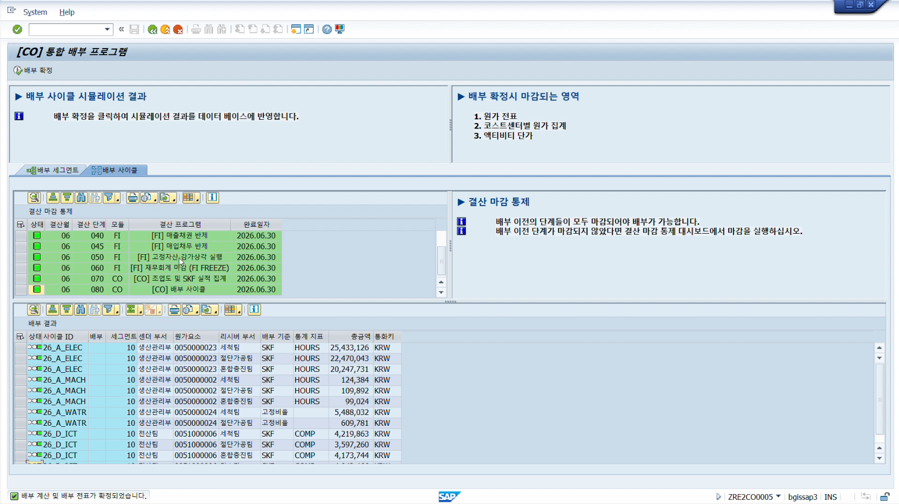
배부 사이클이 초록색으로 바뀌고 하단에 배부 계산 및 전표 확정 메시지가 표시됩니다.
관련 구현
FORM save_allocation_data .
DATA: lt_0006 TYPE TABLE OF zte2co0006,
ls_0006 TYPE zte2co0006,
lv_belnr_seq TYPE n LENGTH 10,
lv_buzei TYPE zte2co0006-buzei,
lt_kostl_sum TYPE TABLE OF zte2co0016,
lv_current_cycle TYPE zte2co0015-cycle VALUE IS INITIAL.
SORT gt_allocation BY cycle.
LOOP AT gt_allocation INTO DATA(ls_alloc).
IF lv_current_cycle <> ls_alloc-cycle.
lv_current_cycle = ls_alloc-cycle.
lv_buzei = 0. " 새 전표이므로 라인아이템 번호 초기화
CALL FUNCTION 'NUMBER_GET_NEXT'
EXPORTING
nr_range_nr = '70' " 고정자산 거래 (임시로 해놨음. 인터벌 추가 필요)
object = 'ZNRE2FI01'
toyear = sy-datum(4)
IMPORTING
number = lv_belnr_seq
EXCEPTIONS
OTHERS = 1.
IF sy-subrc NE 0.
MESSAGE s000 WITH '전표 번호 채번 중 오류가 발생했습니다.' DISPLAY LIKE 'E'.
EXIT.
ENDIF.
ENDIF.
lv_buzei = lv_buzei + 10.
CLEAR ls_0006.
ls_0006-mandt = sy-mandt.
ls_0006-kokrs = pa_kokrs.
ls_0006-belnr = lv_belnr_seq.
ls_0006-buzei = lv_buzei.
ls_0006-gjahr = pa_gjahr.
ls_0006-perio = pa_perio.
ls_0006-wrttp = pa_wrttp.
ls_0006-kstar = ls_alloc-snd_kstar.
ls_0006-kostl = ls_alloc-snd_kostl.
ls_0006-wkg00 = ls_alloc-wkg00 * -1. " 센더는 금액 차감
ls_0006-waers = ls_alloc-waers.
ls_0006-ref_bn = ls_alloc-cycle. " 참조 번호에 사이클 저장
APPEND ls_0006 TO lt_0006.
lv_buzei = lv_buzei + 10.
CLEAR ls_0006.
ls_0006-mandt = sy-mandt.
ls_0006-kokrs = pa_kokrs.
ls_0006-belnr = lv_belnr_seq.
ls_0006-buzei = lv_buzei.
ls_0006-gjahr = pa_gjahr.
ls_0006-perio = pa_perio.
ls_0006-wrttp = pa_wrttp.
ls_0006-kstar = ls_alloc-snd_kstar. " 1차 배부는 유지, 2차는 배부용 원가요소
ls_0006-kostl = ls_alloc-rcv_kostl.
ls_0006-wkg00 = ls_alloc-wkg00. " 리시버는 금액 가산
ls_0006-waers = ls_alloc-waers.
ls_0006-ref_bn = ls_alloc-cycle.
APPEND ls_0006 TO lt_0006.
ENDLOOP.
IF lt_0006 IS NOT INITIAL.
INSERT zte2co0006 FROM TABLE lt_0006.
IF sy-subrc = 0.
MOVE-CORRESPONDING gt_kostl_sum TO lt_kostl_sum.
MODIFY zte2co0016 FROM TABLE lt_kostl_sum.
COMMIT WORK AND WAIT.
ELSE.
ROLLBACK WORK.
MESSAGE s000 WITH 'CO 전표 생성 중 오류가 발생했습니다.' DISPLAY LIKE 'E'.
ENDIF.
ENDIF.
ENDFORM.취소 모드에서 기존 배부 내역을 찾아 집계와 액티비티 단가를 복구·초기화하고, 결산 상태를 다시 진행 중으로 변경합니다. 취소 완료 메시지와 비워진 결과를 확인한 뒤 다시 미리보기로 이어집니다.

배부 내역과 액티비티 단가의 초기화 완료 메시지를 확인합니다.
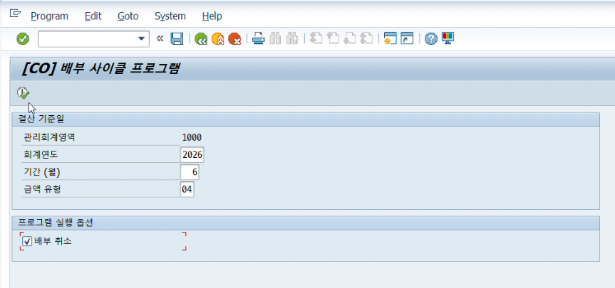
선택 화면에서 배부 취소 체크박스를 선택합니다.

상단의 실행 버튼이 배부 취소로 바뀐 상태입니다.

결과 목록이 비워지고 배부 사이클은 미완료 상태로 표시됩니다.
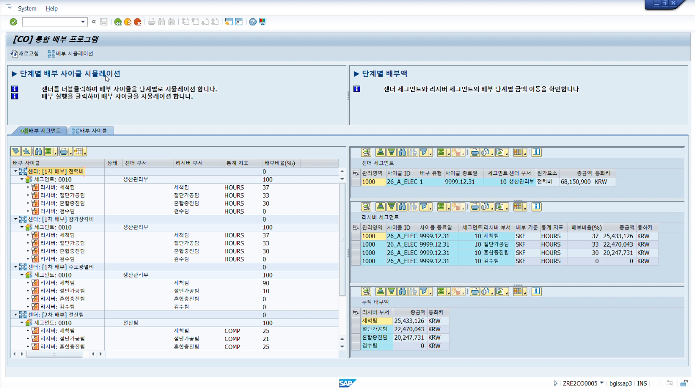
일반 실행 모드에서 전력비 배부액을 다시 계산한 화면입니다.
관련 구현
FORM reverse_allocation USING p_kokrs.
DATA : lt_co0006 TYPE TABLE OF zte2co0006,
ls_co0006 TYPE zte2co0006,
lt_co0004 TYPE TABLE OF zte2co0004,
lv_commit(1).
CLEAR : ls_co0006, lv_commit.
REFRESH : lt_co0004, lt_co0006.
SELECT kokrs belnr buzei gjahr perio wrttp kstar kostl aufnr wkg00 waers megbtr meins ref_bn
erdat ernam erzet aedat aenam aezet
INTO CORRESPONDING FIELDS OF TABLE lt_co0006
FROM zte2co0006
WHERE kokrs = p_kokrs
AND gjahr = pa_gjahr
AND perio = pa_perio
AND wrttp = pa_wrttp
AND ref_bn IN ( '26_A_ELEC', '26_A_WATR', '26_A_MACH', '26_D_ICT', '26_D_PROD' ).
IF sy-subrc <> 0.
MESSAGE s000 WITH '역분개할 배부 전표 내역이 존재하지 않습니다.' DISPLAY LIKE 'E'.
lv_commit = 'X'.
RETURN.
ENDIF.
DELETE zte2co0006 FROM TABLE lt_co0006.
PERFORM rollback_co0016 USING lt_co0006
CHANGING lv_commit.
SELECT kokrs gjahr perio kostl lstar versn tkg00 waers erdat ernam erzet aedat aenam aezet
INTO CORRESPONDING FIELDS OF TABLE lt_co0004
FROM zte2co0004
WHERE kokrs = p_kokrs
AND gjahr = pa_gjahr
AND perio = pa_perio
AND versn = '000'.
IF sy-subrc EQ 0.
DELETE zte2co0004 FROM TABLE lt_co0004.
ENDIF.
IF lv_commit IS INITIAL.
zcl_e2_co_close=>close_module(
EXPORTING
iv_kokrs = p_kokrs
iv_gjahr = pa_gjahr
iv_monat = pa_perio
iv_step = '080'
iv_module = 'CO'
iv_prog_id = sy-cprog
iv_status = 'O' ).
COMMIT WORK.
ELSE.
ROLLBACK WORK.
ENDIF.
MESSAGE s000 WITH '해당 월의 배부 내역 및 액티비티 단가가 성공적으로 초기화 되었습니다.'.
ENDFORM.배부 규칙 CO0013·0014·0015 → SKF 실적 CO0012 / 센더 잔액 CO0016 → 원가전표 CO0006 / 집계 CO0016 → 결산 상태 CO0010
테이블 ID는 프로젝트 CBO 테이블 ZTE2 접두어 기준입니다.업무 처리로 쌓인 데이터를 분석하고 결산 상태를 관리합니다.
고객·품목별 매출과 원가를 분석하고 채권 현황으로 이어집니다. ABAP CDS의 분석 필드를 OData로 공개해 UI5 화면에서 사용합니다.
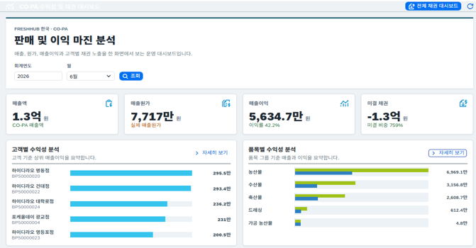
고객·품목별 수익성 요약과 전체 채권 대시보드 진입 화면입니다.
관련 구현
@AccessControl.authorizationCheck: #NOT_REQUIRED
@EndUserText.label: '[CO] 수익성 분석'
@Metadata.ignorePropagatedAnnotations: true
@Analytics.query: true
@VDM.viewType: #CONSUMPTION
@OData.publish: true
define view zcds_e2_co_0021
as select from zcds_e2_co_0020
{
@AnalyticsDetails.query.display: #KEY_TEXT
key Customer,
@AnalyticsDetails.query.display: #KEY_TEXT
key Material,
key FiscalYear,
key FiscalPeriod,
CustomerName,
Region,
MaterialName,
@ObjectModel.text.element: ['MaterialGroupName'] //여기서도 한 번 더 묶어주면 UI5 호환성이 좋음.
MaterialGroup,
MaterialGroupName,
@DefaultAggregation: #SUM
@Semantics.quantity.unitOfMeasure: 'Unit'
SalesQuantity,
Unit,
@DefaultAggregation: #SUM
@Semantics.amount.currencyCode: 'Currency'
RevenueAmount,
@DefaultAggregation: #SUM
@Semantics.amount.currencyCode: 'Currency'
StandardCogsAmount,
@DefaultAggregation: #SUM
@Semantics.amount.currencyCode: 'Currency'
StandardMargin,
@DefaultAggregation: #SUM
@Semantics.amount.currencyCode: 'Currency'
ActualCogsAmount,
@DefaultAggregation: #SUM
@Semantics.amount.currencyCode: 'Currency'
ActualMargin,
Currency,회계연도·기간·통화로 재무상태표와 손익계산서를 조회합니다. 재무구조와 손익 요약을 확인하고 계정 검색으로 상세 항목을 찾으며, PDF 미리보기와 인쇄·저장으로 연결합니다. 옆의 코드는 재무제표에 공급하는 잔액·계정 분류 데이터입니다.

자산·부채·자본 합계와 재무상태 검증, 재무구조 비율을 확인합니다.
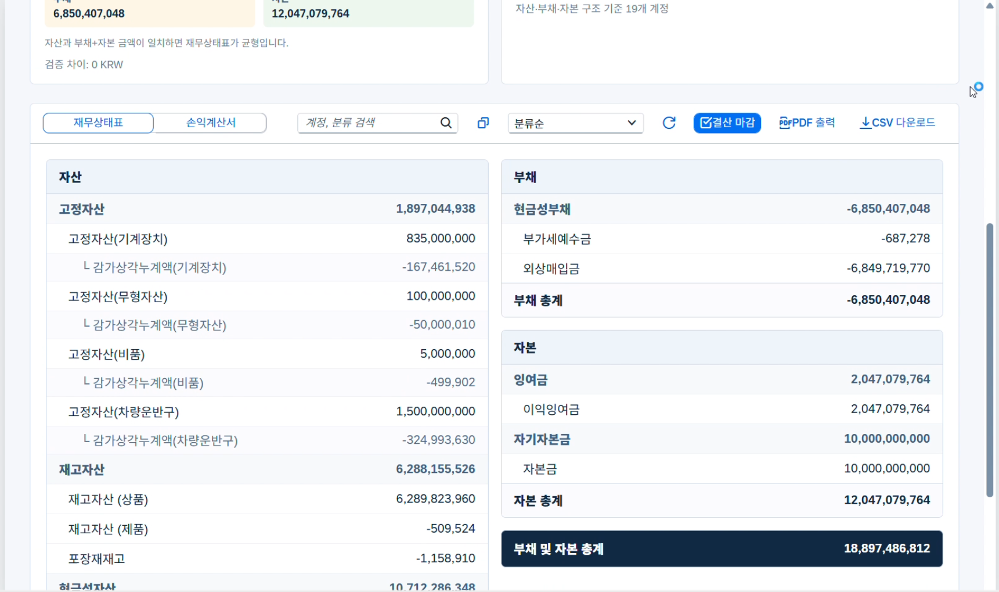
자산과 부채·자본을 계정 분류별로 펼쳐 확인합니다.

계정 코드와 명칭으로 원하는 재무제표 항목을 찾습니다.
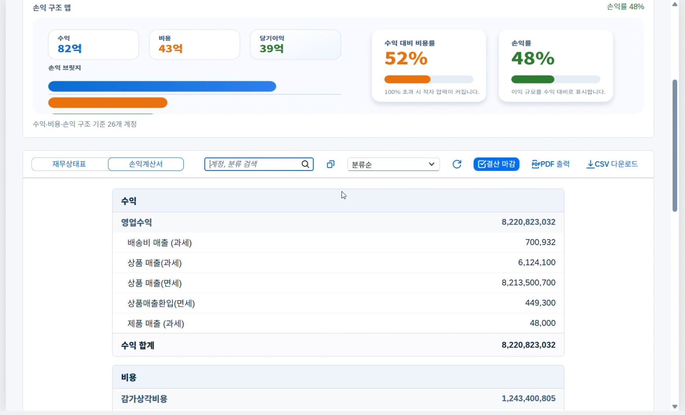
수익·비용과 당기순이익, 수익 대비 비용률과 순이익률을 확인합니다.
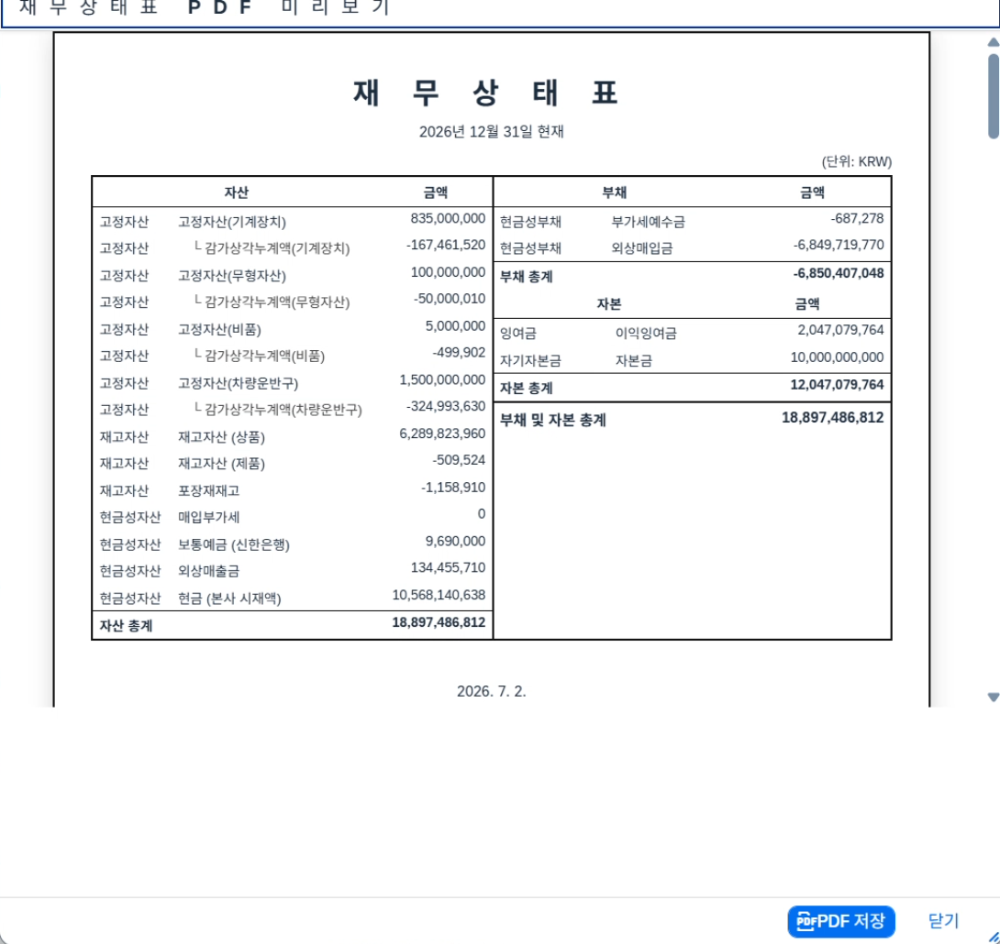
조회한 재무상태표를 출력용 문서로 확인합니다.
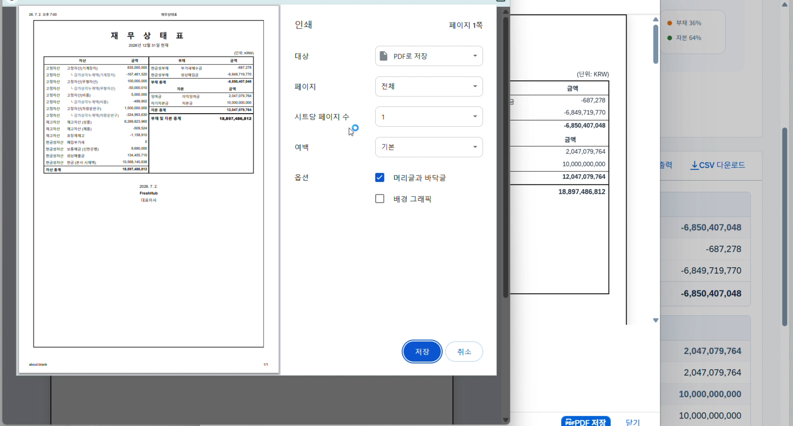
인쇄 화면에서 PDF 저장으로 이어집니다.

수익과 비용 항목을 출력용 손익계산서로 확인합니다.

손익계산서를 인쇄하거나 PDF로 저장합니다.
관련 구현
@Metadata.ignorePropagatedAnnotations: true
@OData.entitySet.name: 'SheetSet'
@OData.publish: true
define view ZCDS_E2_FI_0011
as select from ZCDS_E2_FI_0014 as Balance
left outer join zte2fi0001 as GLMaster on Balance.bukrs = GLMaster.bukrs
and Balance.saknr = GLMaster.saknr
{
@UI.selectionField: [{ position: 10 }]
@UI.lineItem: [{ position: 10 }]
@EndUserText.label: '회사코드'
key Balance.bukrs as CompanyCode,
@UI.selectionField: [{ position: 20 }]
@UI.lineItem: [{ position: 20 }]
@EndUserText.label: '회계연도'
key Balance.gjahr as FiscalYear,
@UI.selectionField: [{ position: 30 }]
@EndUserText.label: '회계연월(기간)'
key Balance.FiscalPeriod as FiscalPeriod,
@UI.selectionField: [{ position: 40 }]
@UI.lineItem: [{ position: 50 }]
@EndUserText.label: 'G/L 계정'
key Balance.saknr as GLAccount,
@UI.selectionField: [{ position: 50 }]
@UI.lineItem: [{ position: 30 }]
@EndUserText.label: 'B/S 계정 여부'
GLMaster.xbilk as IsBalanceSheetAccount,
@UI.lineItem: [{ position: 10 }]
@EndUserText.label: '대분류'
GLMaster.cate_l as CategoryLarge,
@UI.lineItem: [{ position: 20 }]
@EndUserText.label: '중분류'define view ZCDS_E2_FI_0014
as select from zte2fi0004
{
key bukrs,
key gjahr,
key saknr,
'00' as FiscalPeriod,
waers,
tslvt as BalanceCarriedForward,
( tslvt - tslvt ) as PeriodDebitAmount,
( tslvt - tslvt ) as PeriodCreditAmount,
( tslvt - tslvt ) as PeriodNetChange,
tslvt as EndingBalance
}
union all select from zte2fi0004
{
key bukrs,
key gjahr,
key saknr,
'01' as FiscalPeriod,
waers,
( tslvt - tslvt ) as BalanceCarriedForward,
hsl01_s as PeriodDebitAmount,
hsl01_h as PeriodCreditAmount,
(hsl01_s - hsl01_h) as PeriodNetChange,
(hsl01_s - hsl01_h) as EndingBalance
}
union all select from zte2fi0004
{
key bukrs,
key gjahr,
key saknr,여러 프로그램에서 같은 결산 통제 클래스를 호출하고, 대시보드에서 기간·모듈별 상태를 확인합니다. 다른 모듈은 팀 프로그램과의 연계 대상입니다.
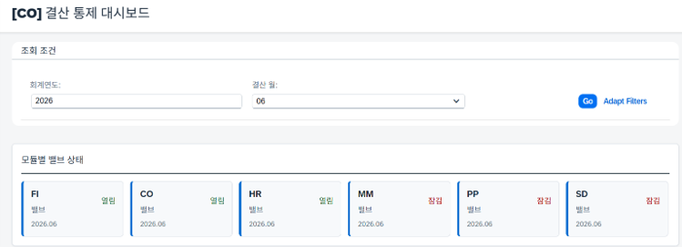
모듈별 열림·잠김 상태를 확인합니다.
관련 구현
METHOD period_check.
DATA: lv_status TYPE zte2co0009-co_status.
CLEAR rv_check.
SELECT SINGLE co_status
FROM zte2co0009
WHERE bukrs = @iv_bukrs
AND gjahr = @iv_gjahr
AND monat = @iv_monat
AND co_module = @iv_module
INTO @lv_status.
IF sy-subrc = 0 AND lv_status = 'C'.
rv_check = 'C'. " 진행 불가(Closed) 상태 반환
MESSAGE |{ iv_gjahr }년 { iv_monat }월의 { iv_module } 모듈 결산이 마감되어 전표/수불을 생성할 수 없습니다.|
TYPE 'S' DISPLAY LIKE 'E'.
EXIT.
ELSE.
rv_check = 'O'.
ENDIF.
ENDMETHOD.자재·공급업체·구매정보·구매오더·계정·계정결정 기준을 각각의 업무 객체로 구성했습니다. 공통 구조를 재사용하면서도 검증 시점, 키 생성, 상태 제어는 업무에 맞게 구현했습니다.
다국어 텍스트와 종속 검색 도움말, 상태에 따른 수정 제어를 구현했습니다.
EINA / EINE부모·자식 모델에 입력 단계와 저장 단계의 수량 검증을 연결했습니다.
EKKO / EKPO헤더 업무 번호와 부모별 품목번호의 채번 책임을 나누었습니다.
VENDOR공급업체 그룹에 맞는 번호 범위를 설정 테이블에서 조회합니다.
SKA1계정과 언어별 텍스트를 모델링하고 사용 중지 Action을 정의했습니다.
OBYC이동유형별 계정결정 기준과 순번 생성 로직을 구성했습니다.
공급업체 그룹 설정을 싱글톤 Root와 자식 항목으로 구성했습니다. 하나의 진입점에서 언어별 설명을 관리하고 Draft 편집과 전송요청 선택을 연결합니다.
목록과 상태 전환부터 입력 검증, 저장 결과까지.
목록의 필드·상태·Action은 UI Annotation에서 구성하고, 서비스에서 자재 엔티티를 공개합니다.
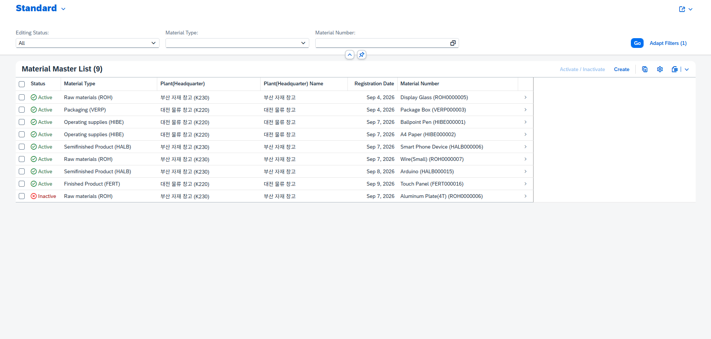
자재 유형·플랜트·자재번호와 활성 상태를 한 화면에서 조회합니다.
관련 구현
업무 Action과 상태 표현을 Metadata Extension에 분리합니다.
annotate entity zc_a18_mara with
{
@UI: { lineItem: [{ position: 05, type: #FOR_ACTION, dataAction: 'inactivate', label: 'Activate / Inactivate' }],
hidden: true
}
Loekz;
@UI: { lineItem: [{ position: 03, importance: #HIGH, label: 'Status', criticality: 'StatusCriticality', criticalityRepresentation: #WITH_ICON }] }
Status;
@UI: { selectionField: [{ element: 'Mtart', position: 10 }],
lineItem: [{ position: 10, importance: #HIGH, label: 'Material Type' }],
textArrangement: #TEXT_FIRST
}
Mtart;부모 자재와 텍스트 Projection을 서비스의 공개 엔티티로 묶습니다.
@EndUserText.label: '[A18] 자재(부모) Service Definition'
define service Zui_a18_mara {
expose zc_a18_mara as Material;
expose ZC_A18_MARATEXT as MaterialDesc;
}Action으로 Loekz를 전환하고, 인스턴스 상태에 따라 필드와 Draft Edit의 허용 여부를 결정합니다.

Activate / Inactivate 실행 전후의 상태 표시를 비교할 수 있습니다.
관련 구현
레코드를 유지하면서 사용 상태를 전환하는 Action 구현입니다.
METHOD inactivate.
DATA lt_update TYPE TABLE FOR UPDATE zr_a18_mara.
CLEAR lt_update.
READ ENTITIES OF zr_a18_mara IN LOCAL MODE
ENTITY Material
FIELDS ( Loekz )
WITH CORRESPONDING #( keys )
RESULT DATA(read_result).
LOOP AT read_result INTO DATA(ls_read_result).
READ TABLE keys INTO DATA(key) WITH KEY %tky = ls_read_result-%tky.
CHECK sy-subrc = 0.
CASE ls_read_result-Loekz.
WHEN space.
ls_read_result-Loekz = 'X'.
WHEN 'X'.
ls_read_result-Loekz = space.
ENDCASE.
APPEND VALUE #( %tky = ls_read_result-%tky
loekz = ls_read_result-Loekz
) TO lt_update.
ENDLOOP.
MODIFY ENTITIES OF zr_a18_mara IN LOCAL MODE
ENTITY Material
UPDATE FIELDS ( Loekz )
WITH lt_update.
READ ENTITIES OF zr_a18_mara IN LOCAL MODE
ENTITY Material
ALL FIELDS
WITH CORRESPONDING #( keys )
RESULT DATA(updated_result).
result = VALUE #(
FOR updated IN updated_result
(
%tky = updated-%tky
%param = updated
)
).
ENDMETHOD.인스턴스 상태에 따라 허용하는 작업과 필드가 달라집니다.
METHOD get_instance_features.
DATA : ls_result LIKE LINE OF result.
READ ENTITIES OF zr_a18_mara IN LOCAL MODE
ENTITY Material
ALL FIELDS
WITH CORRESPONDING #( keys )
RESULT DATA(result_data)
FAILED DATA(failed_data)
REPORTED DATA(reported_data).
LOOP AT keys INTO DATA(key).
READ TABLE result_data INTO DATA(ls_result_data) WITH KEY id COMPONENTS %tky = key-%tky.
IF sy-subrc <> 0.
CONTINUE.
ENDIF.
ls_result-%tky = key-%tky.
ls_result-%features-%field-Waers = if_abap_behv=>fc-f-read_only.
IF ls_result_data-Matfi = 'X'.
ls_result-%features-%field-Bklas = if_abap_behv=>fc-f-read_only.
ls_result-%features-%field-Ersda = if_abap_behv=>fc-f-read_only.
ls_result-%features-%field-Lgort = if_abap_behv=>fc-f-read_only.
ls_result-%features-%field-Mtart = if_abap_behv=>fc-f-read_only.
ls_result-%features-%field-Werks = if_abap_behv=>fc-f-read_only.
ls_result-%features-%field-Matkl = if_abap_behv=>fc-f-read_only.
ELSEIF ls_result_data-Matfi = space.
ls_result-%features-%field-Bklas = if_abap_behv=>fc-f-unrestricted.
ls_result-%features-%field-Ersda = if_abap_behv=>fc-f-unrestricted.
ls_result-%features-%field-Lgort = if_abap_behv=>fc-f-unrestricted.
ls_result-%features-%field-Mtart = if_abap_behv=>fc-f-unrestricted.
ls_result-%features-%field-Werks = if_abap_behv=>fc-f-unrestricted.
ls_result-%features-%field-Matkl = if_abap_behv=>fc-f-unrestricted.
ENDIF.
IF ls_result_data-Loekz = 'X'.
ls_result-%action-Edit = if_abap_behv=>fc-o-disabled.
ELSE.
ls_result-%action-Edit = if_abap_behv=>fc-o-enabled.
ENDIF.
APPEND ls_result TO result.
CLEAR ls_result.
ENDLOOP.
ENDMETHOD.선택 시에는 Mtart를 검색 도움말에 전달하고, 저장 시에는 자재 유형·평가클래스 조합을 검증합니다.

반제품(HALB)을 선택했을 때 연결되는 평가클래스 검색 도움말입니다.
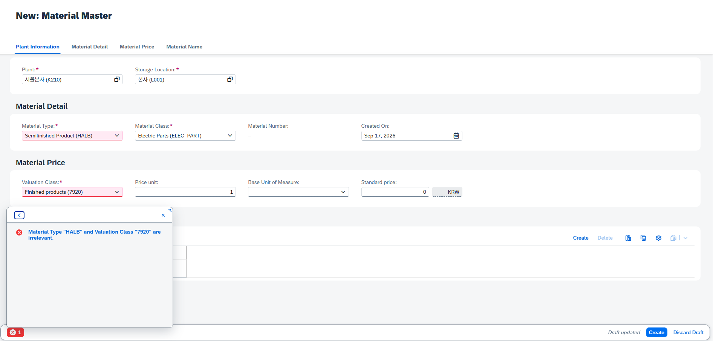
자재 유형과 평가클래스 조합 오류를 필드와 메시지로 표시합니다.
관련 구현
Mtart 값을 평가클래스 검색 조건과 결과 바인딩에 연결합니다.
@ObjectModel.text.element: [ 'BklasText' ]
@Consumption.valueHelpDefinition: [{
entity: {
name: 'ZI_A18_BKLAS_F4',
element: 'Bklas'
},
additionalBinding: [{
localElement: 'Mtart',
element: 'Mtart',
usage: #FILTER_AND_RESULT
}]
}]
Bklas,선택한 자재 유형·평가클래스를 조회하고, 오류 시 해당 필드와 메시지를 반환합니다.
METHOD check_mtart_bklas.
DATA: ls_reported LIKE LINE OF reported-material.
CLEAR ls_reported.
READ ENTITIES OF zr_a18_mara IN LOCAL MODE
ENTITY Material
FIELDS ( Mtart Bklas )
WITH CORRESPONDING #( keys )
RESULT DATA(read_result).
SELECT mtart, bklas
FROM zi_a18_bklas_f4
FOR ALL ENTRIES IN @read_result
WHERE mtart = @read_result-Mtart
AND Bklas = @read_result-Bklas
INTO TABLE @DATA(lt_mtbk).
CHECK sy-subrc <> 0.
LOOP AT read_result INTO DATA(ls_read_result).
APPEND VALUE #( %tky = ls_read_result-%tky
%state_area = 'check_mtart_bklas'
) TO reported-material.
APPEND VALUE #( %tky = ls_read_result-%tky ) TO failed-material.
ls_reported-%element-mtart = if_abap_behv=>mk-on.
ls_reported-%element-bklas = if_abap_behv=>mk-on.
APPEND VALUE #( %tky = ls_read_result-%tky
%state_area = 'check_mtart_bklas'
%msg = new_message(
id = 'ZMCA18_PRO'
number = '012'
severity = if_abap_behv_message=>severity-error
v1 = ls_read_result-Mtart
v2 = ls_read_result-Bklas
)
%element = ls_reported-%element
) TO reported-material.
CLEAR ls_reported.
ENDLOOP.
ENDMETHOD.업무 번호 생성, 언어별 텍스트, Draft와 저장 검증을 생성 결과와 함께 볼 수 있습니다. 플랜트·저장위치 검증도 같은 저장 흐름에 포함됩니다.
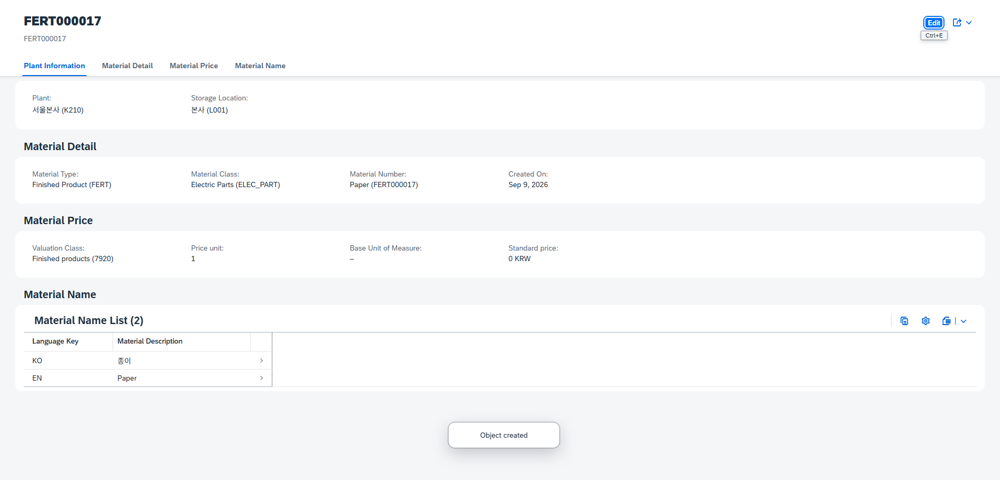
생성된 자재번호 FERT000017과 한국어·영어 자재명을 확인할 수 있습니다.
관련 구현
기술 키 MatUuid와 업무 번호 Matnr의 생성 책임을 분리합니다.
METHOD set_matnr.
READ ENTITIES OF zr_a18_mara IN LOCAL MODE
ENTITY Material
FIELDS ( mtart matnr )
WITH CORRESPONDING #( keys )
RESULT DATA(read_result).
CHECK read_result IS NOT INITIAL.
LOOP AT read_result ASSIGNING FIELD-SYMBOL(<fs_read_result>).
IF <fs_read_result>-matnr IS NOT INITIAL OR <fs_read_result>-Mtart IS INITIAL.
CONTINUE.
ENDIF.
TRY.
zcl_a18_numbering=>prefix_numbering(
EXPORTING
iv_nr_object = 'ZA18_MATNR'
iv_nr_range = '10'
iv_subobject = CONV #( <fs_read_result>-Mtart )
IMPORTING
ev_number = DATA(lv_number)
).
MODIFY ENTITIES OF zr_a18_mara IN LOCAL MODE
ENTITY Material
UPDATE FIELDS ( Matnr )
WITH VALUE #( ( %tky = <fs_read_result>-%tky
Matnr = lv_number )
).
CATCH cx_number_ranges INTO DATA(lx_error).
APPEND VALUE #( %tky = <fs_read_result>-%tky
%msg = new_message(
id = 'ZMCA18_PRO'
number = '009'
severity = if_abap_behv_message=>severity-error
)
) TO reported-material.
ENDTRY.
ENDLOOP.
ENDMETHOD.부모 자재와 여러 언어의 텍스트를 하나의 업무 객체로 연결합니다.
define root view entity zr_a18_mara
as select from zi_a18_mara
composition [0..*] of ZI_A18_MARATEXT as _MatnrDesc
association [0..1] to ZI_A18_MARATEXT as _MatnrText on $projection.MatUuid = _MatnrText.MatUuid
and _MatnrText.Spras = $session.system_language
association [0..1] to zi_a18_matkl_t as _MatklText on $projection.Matkl = _MatklText.Matkl
and _MatklText.Spras = $session.system_language
association [0..1] to ZI_A18_WERKS_F4 as _WerksF4 on $projection.Werks = _WerksF4.Werks
and _WerksF4.Bukrs = 'K200'
association [0..1] to ZI_A18_LGORT_F4 as _LgortF4 on $projection.Lgort = _LgortF4.Lgort
and $projection.Werks = _LgortF4.Werks
association [0..1] to zi_a18_mtart_f4 as _MtartF4 on $projection.Mtart = _MtartF4.MaterialType
association [0..1] to zi_a18_bklas_f4 as _BklasF4 on $projection.Bklas = _BklasF4.Bklas
{저장 구조와 실행 시점을 Behavior Definition에서 연결합니다.
managed implementation in class zbp_r_a18_mara unique;
strict ( 2 );
with draft;
define behavior for zr_a18_mara alias Material
persistent table zta18mara
draft table zta18mara_d
lock master total etag LocChangedAt
authorization master ( instance )
etag master ChangedAt
{
create;
update ( features : instance );
association _MatnrDesc { create; with draft; }
field ( numbering : managed, readonly ) MatUuid;
field ( readonly ) Matnr;
field ( mandatory : create ) Matkl, Mtart, Bklas, Werks, Lgort;
field ( features : instance ) Waers, Werks, Lgort, Mtart, Bklas, Ersda, Matkl;
determination set_default_value on modify { create; }
determination realtime_message on modify { create; update; }
determination set_matnr on save { create; }
determination set_matfi on save { create; }
validation check_mandatory on save { create; update; }
validation check_duplicate on save { create; }
validation check_werks_lgort on save { create; update; }
validation check_mtart_bklas on save { create; update; }
validation check_value on save { create; update; }
validation check_child on save { create; update; }
action inactivate result [1] $self;
draft action ( features : instance ) Edit;
draft determine action Prepare
{
validation ( always ) check_child;
validation MaterialDesc~check_mandatory_c;
}
draft action Activate optimized;
draft action Discard;
draft action Resume;허용하지 않는 조합을 저장 단계에서 차단하고 오류 필드를 지정합니다.
METHOD check_werks_lgort.
DATA ls_reported LIKE LINE OF reported-material.
CLEAR ls_reported.
READ ENTITIES OF zr_a18_mara IN LOCAL MODE
ENTITY Material
FIELDS ( Werks Lgort )
WITH CORRESPONDING #( keys )
RESULT DATA(read_result)
FAILED DATA(read_failed)
REPORTED DATA(read_reported).
CHECK read_result IS NOT INITIAL.
SELECT werks, lgort
FROM zi_a18_lgort_f4
FOR ALL ENTRIES IN @read_result
WHERE werks = @read_result-Werks
AND lgort = @read_result-Lgort
INTO TABLE @DATA(lt_werks).
LOOP AT read_result INTO DATA(ls_read_result).
IF NOT line_exists( lt_werks[ werks = ls_read_result-Werks
lgort = ls_read_result-Lgort ] ).
APPEND VALUE #( %tky = ls_read_result-%tky
%state_area = 'VALIDATE_WERKS'
) TO reported-material.
ls_reported-%element-werks = if_abap_behv=>mk-on.
ls_reported-%element-lgort = if_abap_behv=>mk-on.
APPEND VALUE #( %tky = ls_read_result-%tky ) TO failed-material.
APPEND VALUE #( %tky = ls_read_result-%tky
%state_area = 'VALIDATE_WERKS'
%msg = new_message(
id = 'ZMCA18_PRO'
number = '007'
v1 = ls_read_result-Werks
v2 = ls_read_result-Lgort
severity = if_abap_behv_message=>severity-error
)
%element = ls_reported-%element
) TO reported-material.
CLEAR ls_reported.
ENDIF.
ENDLOOP.
ENDMETHOD.Number Range 호출과 번호 포맷을 재사용 가능한 클래스로 분리합니다.
METHOD prefix_numbering.
TRY.
cl_numberrange_runtime=>number_get(
EXPORTING
nr_range_nr = iv_nr_range
object = iv_nr_object
subobject = iv_subobject
quantity = CONV #( iv_quantity )
IMPORTING
number = DATA(lv_single_number)
returncode = DATA(lv_returncode)
).
DATA(lv_orgn) = condense( val = lv_single_number ).
DATA(lv_prefix_len) = strlen( iv_subobject ).
DATA(lv_num_len) = 10 - lv_prefix_len.
ev_number = iv_subobject && substring( val = lv_orgn
off = strlen( lv_orgn ) - lv_num_len
len = lv_num_len
).
CATCH cx_nr_object_not_found INTO DATA(lx_error).
RAISE EXCEPTION lx_error.
CATCH cx_number_ranges INTO DATA(lx_nr_error).
ENDTRY.
ENDMETHOD.필터 테이블의 활성 상태를 Value Help 조회 조건으로 사용합니다.
define view entity zi_a18_meins_f4
as select from t006 as Meins
inner join zta18meins_f as MeinsFilter on Meins.msehi = MeinsFilter.msehi
and MeinsFilter.active = 'X'
left outer join t006a as MeinsText on Meins.msehi = MeinsText.msehi
and MeinsText.spras = $session.system_language
{
@ObjectModel.text.element: [ 'Msehl' ]
key Meins.msehi as Msehi,
@Semantics.text: true
MeinsText.msehl as Msehl
}최소·최대 주문 수량 오류를 입력 단계에서 확인하고 수정합니다.
공급업체·자재·구매정보 번호를 Root에 정의하고, 품목은 Composition으로 연결합니다.

공급업체와 자재, 구매정보 번호를 함께 조회합니다.

추가된 공급업체·자재 조합과 구매정보 번호를 확인합니다.
관련 구현
목록의 공급업체·자재·구매정보 번호와 하위 품목 관계를 함께 정의합니다.
define root view entity ZR_A18_EINA
as select from ZI_A18_EINA
composition [0..*] of ZI_A18_EINE as _Eine
{
key InfUuid,
Infnr,
Lifnr,
SupplierName,
Matnr,
MatnrText,
Meins,
Loekz,
Txz01,
Vabme,
VabmeText,
Mahn1,
Mahn2,
Mahn3,
@Semantics.user.createdBy: true
CreatedBy,
@Semantics.systemDateTime.createdAt: true
CreationAt,
@Semantics.user.lastChangedBy: true
ChangedBy,
@Semantics.systemDateTime.lastChangedAt: true
ChangedAt,
@Semantics.systemDateTime.localInstanceLastChangedAt: true
LocChangedAt,
/* Associations */
_Eine,
_Matnr,
_Supplier,
_Vabme
}부분 수정 검증과 CREATE / SAVE 검증의 실행 지점을 선언합니다.
define behavior for ZI_A18_EINE alias PurchaseInfoChild
persistent table zta18eine
draft table zta18eine_d
lock dependent by _Eina
authorization dependent by _Eina
{
update ( precheck );
delete;
field ( readonly : update ) werks;
field ( readonly ) InfUuid, WerksName;
field ( mandatory ) Netpr, Bstma, Minbm;
field ( features : instance ) Waers, Meins;
association _Eina { with draft; }
determination set_werksname on modify { field werks; }
determination set_default_value on modify { create; }
determination set_defaults on modify { create; }
validation check_values on save { create; update; }최소 100·최대 50의 오류 화면과 최대 500으로 수정한 화면입니다. 변경 필드를 반영하는 Precheck와 저장 시 재검증 코드를 함께 배치했습니다.
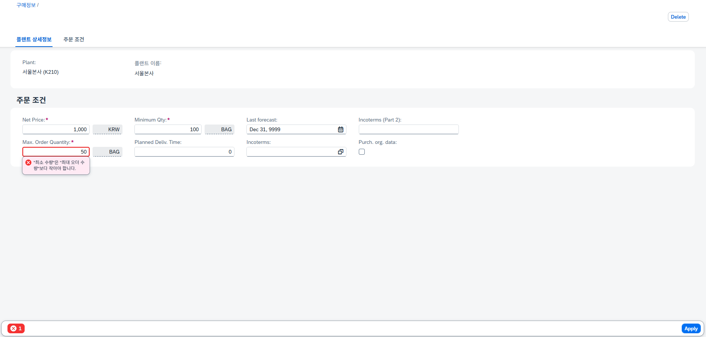
최소 100, 최대 50을 입력했을 때 오류가 표시된 화면입니다.
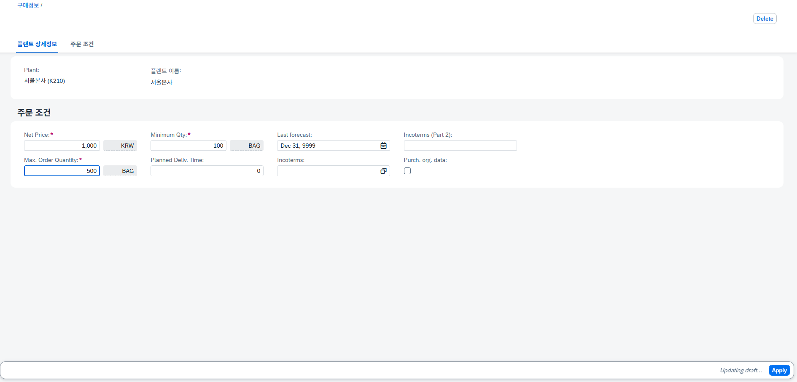
최대 수량을 500으로 수정한 뒤 입력 상태를 확인합니다.
관련 구현
생략된 필드를 0으로 간주하지 않고 현재 엔티티 값으로 보완합니다.
METHOD precheck_update.
DATA : ls_reported LIKE LINE OF reported-purchaseinfochild.
CLEAR ls_reported.
READ ENTITIES OF zr_a18_eina IN LOCAL MODE
ENTITY PurchaseInfoChild
ALL FIELDS WITH VALUE #( FOR entity IN entities (
%tky = entity-%tky
) )
RESULT DATA(read_result).
LOOP AT entities INTO DATA(ls_entity).
DATA(lv_failed) = abap_false.
IF ls_entity-%control-Minbm <> if_abap_behv=>mk-on
AND ls_entity-%control-Bstma <> if_abap_behv=>mk-on
AND ls_entity-%control-Netpr <> if_abap_behv=>mk-on.
CONTINUE.
ENDIF.
READ TABLE read_result INTO DATA(ls_read_result) WITH KEY %tky = ls_entity-%tky.
IF sy-subrc <> 0.
CONTINUE.
ENDIF.
DATA(lv_bstma) = ls_read_result-Bstma.
DATA(lv_minbm) = ls_read_result-Minbm.
DATA(lv_netpr) = ls_read_result-Netpr.
IF ls_entity-%control-Bstma = if_abap_behv=>mk-on.
lv_bstma = ls_entity-Bstma.
ENDIF.
IF ls_entity-%control-Minbm = if_abap_behv=>mk-on.
lv_minbm = ls_entity-Minbm.
ENDIF.
IF ls_entity-%control-Netpr = if_abap_behv=>mk-on.
lv_netpr = ls_entity-Netpr.
ENDIF.
IF ( ls_entity-%control-Minbm = if_abap_behv=>mk-on
OR ls_entity-%control-Bstma = if_abap_behv=>mk-on )
AND lv_minbm IS NOT INITIAL
AND lv_bstma IS NOT INITIAL
AND lv_minbm > lv_bstma.
lv_failed = abap_true.
APPEND VALUE #(
%tky = ls_read_result-%tky
%op-%update = if_abap_behv=>mk-on
%path = VALUE #(
PurchaseInfoParent-%is_draft = ls_read_result-%is_draft
PurchaseInfoParent-InfUuid = ls_read_result-%key-InfUuid )
%msg = new_message(
id = 'ZMCA18_PRO'
number = '021'
severity = if_abap_behv_message=>severity-error
v1 = 'Maximum Order Quantity'
v2 = 'Minimum Qty' )
%element-Bstma = if_abap_behv=>mk-on
%element-Minbm = if_abap_behv=>mk-on )
TO reported-purchaseinfochild.
ENDIF.입력 단계와 저장 단계의 메시지 역할을 구분합니다.
APPEND VALUE #( %tky = ls_read_result-%tky
%state_area = 'Quantity_Error' )
TO reported-purchaseinfochild.
APPEND VALUE #( %tky = ls_read_result-%tky
%state_area = 'Quantity_Error2' )
TO reported-purchaseinfochild.
APPEND VALUE #( %tky = ls_read_result-%tky
%state_area = 'Currency_Error' )
TO reported-purchaseinfochild.
DATA(lv_failed) = abap_false.
IF ls_read_result-Minbm > ls_read_result-Bstma.
lv_failed = abap_true.
APPEND VALUE #(
%tky = ls_read_result-%tky
%path = VALUE #(
PurchaseInfoParent-%is_draft = ls_read_result-%is_draft
PurchaseInfoParent-InfUuid = ls_read_result-%key-InfUuid )
%state_area = 'Quantity_Error'
%msg = new_message(
id = 'ZMCA18_PRO'
number = '021'
severity = if_abap_behv_message=>severity-error
v1 = 'Maximum Order Quantity'
v2 = 'Minimum Qty' )
%element-Bstma = if_abap_behv=>mk-on
%element-Minbm = if_abap_behv=>mk-on )
TO reported-purchaseinfochild.
ENDIF.
IF ls_read_result-Bstma < 0 OR ls_read_result-Minbm < 0.
lv_failed = abap_true.
APPEND VALUE #(
%tky = ls_read_result-%tky
%path = VALUE #(
PurchaseInfoParent-%is_draft = ls_read_result-%is_draft
PurchaseInfoParent-InfUuid = ls_read_result-%key-InfUuid )
%state_area = 'Quantity_Error2'
%msg = new_message(
id = 'ZMCA18_PRO'
number = '017'
severity = if_abap_behv_message=>severity-error )
%element-Bstma = COND #( WHEN ls_read_result-Bstma < 0
THEN if_abap_behv=>mk-on )
%element-Minbm = COND #( WHEN ls_read_result-Minbm < 0
THEN if_abap_behv=>mk-on ) )
TO reported-purchaseinfochild.
ENDIF.
IF ls_read_result-Netpr < 0.
lv_failed = abap_true.
APPEND VALUE #(
%tky = ls_read_result-%tky
%path = VALUE #(
PurchaseInfoParent-%is_draft = ls_read_result-%is_draft
PurchaseInfoParent-InfUuid = ls_read_result-%key-InfUuid )
%state_area = 'Currency_Error'
%msg = new_message(
id = 'ZMCA18_PRO'
number = '005'
severity = if_abap_behv_message=>severity-error )
%element-Netpr = if_abap_behv=>mk-on )
TO reported-purchaseinfochild.
ENDIF.
IF lv_failed = abap_true.
APPEND VALUE #( %tky = ls_read_result-%tky )
TO failed-purchaseinfochild.
ENDIF.
ENDLOOP.
ENDMETHOD.메시지 갱신 대상을 projection behavior에도 연결합니다.
side effects
{
field Meins affects messages;
field Lifnr affects messages;
field Matnr affects messages;
}구매 문서와 품목을 연결하고, 저장된 문서 정보를 확인합니다.
구매 문서유형별로 번호 범위를 선택해 문서 번호를 생성합니다. 생성 전후의 목록에서 문서 번호를 확인할 수 있습니다.
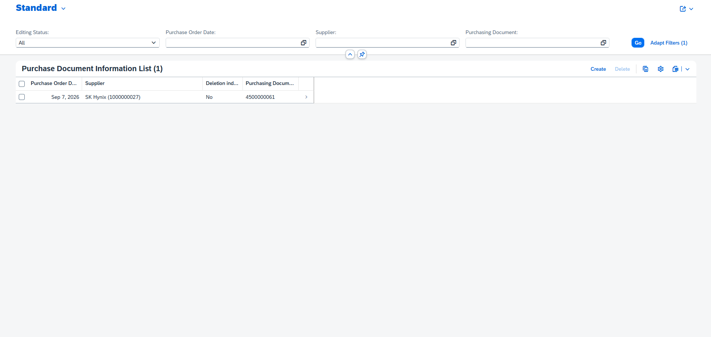
구매오더 일자, 공급업체, 구매 문서 번호로 조회합니다.

생성한 구매 문서가 목록에 반영된 화면입니다.
관련 구현
문서 유형을 번호 범위에 매핑하고 공통 채번 클래스를 호출합니다.
CASE lv_bsart.
WHEN 'NB'.
lv_numberrange = '45'.
WHEN 'NB2'.
lv_numberrange = '49'.
WHEN 'NB2C'.
lv_numberrange = '50'.
WHEN 'UB'.
lv_numberrange = '41'.
ENDCASE.
zcl_a18_numbering=>lifnr_numebring(
EXPORTING
iv_nr_object = 'ZA18EBELN'
iv_nr_range = lv_numberrange
IMPORTING
ev_number = DATA(lv_ebeln)
).
APPEND VALUE #( %tky = ls_read_result-%tky
ebeln = lv_ebeln
) TO lt_update.부모 문서별 최댓값에 10을 더하고 같은 요청의 다음 품목 계산에도 반영합니다. 생성 화면의 품목 10과 저장 후 연결된 품목을 함께 보여줍니다.

품목번호 10이 표시된 생성 화면에서 플랜트와 자재 정보를 입력합니다.
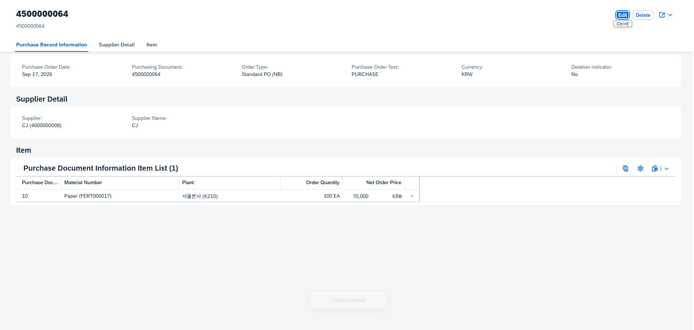
문서 4500000064 아래 공급업체와 품목번호 10, 수량·금액이 연결된 모습입니다.
관련 구현
같은 요청에서 추가되는 여러 품목도 서로 다른 번호를 받도록 목록을 갱신합니다.
METHOD earlynumbering_cba_Ekpo.
DATA : lv_new_ebelp TYPE zea18ebelp.
READ ENTITIES OF zr_a18_ekko IN LOCAL MODE
ENTITY PurchaseHeader BY \_Ekpo
FIELDS ( Ebelp )
WITH CORRESPONDING #( entities )
RESULT DATA(read_result).
LOOP AT entities INTO DATA(ls_parent).
LOOP AT ls_parent-%target INTO DATA(ls_target).
IF ls_target-Ebelp IS INITIAL.
DATA(lv_max_ebelp) = REDUCE zea18ebelp(
INIT Max = 0
FOR ls_read_result IN read_result USING KEY entity
WHERE ( EbelnUuid = ls_parent-EbelnUuid )
NEXT Max = COND #(
WHEN ls_read_result-Ebelp > Max
THEN ls_read_result-Ebelp
ELSE Max
)
).
lv_new_ebelp = lv_max_ebelp + 10.
APPEND VALUE #( EbelnUuid = ls_parent-EbelnUuid
Ebelp = lv_new_ebelp
) TO read_result.
ELSE.
lv_new_ebelp = ls_target-Ebelp.
ENDIF.
APPEND VALUE #( %cid = ls_target-%cid
%is_draft = ls_target-%is_draft
EbelnUuid = ls_parent-EbelnUuid
Ebelp = lv_new_ebelp
) TO mapped-purchaseitem.
ENDLOOP.
ENDLOOP.
ENDMETHOD.공급업체 정보와 조정계정을 연결하는 화면입니다.
그룹·공급업체·조정계정·비활성 상태를 UI Annotation의 검색 조건과 목록 열로 구성합니다.
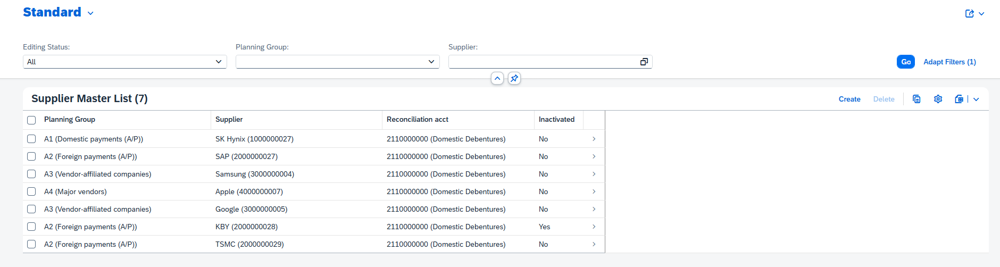
그룹, 공급업체 번호, 조정계정과 비활성 상태를 조회합니다.
관련 구현
그룹·공급업체 검색 조건과 조정계정·비활성 상태 열을 구성합니다.
annotate entity ZC_A18_LFA1 with
{
@UI: { selectionField: [{ element: 'Fdgrv', position: 10 }],
lineItem: [{ position: 10, importance: #HIGH }]
}
Fdgrv;
@UI: { selectionField: [{ element: 'Lifnr', position: 20 }],
lineItem: [{ position: 20, importance: #HIGH }]
}
Lifnr;
@UI: { lineItem: [{ position: 30, importance: #HIGH }]
}
Akont;
@UI: { lineItem: [{ position: 40, importance: #HIGH, label: 'Inactivated' }]
}
Loekz;
}공급업체의 Akont 필드에 계정 검색 도움말을 연결합니다.

계정 마스터에서 생성한 계정을 검색하고 선택합니다.
관련 구현
Akont를 ZI_A18_SAKNR_F4의 Saknr에 연결하고 계정 설명을 함께 표시합니다.
define root view entity ZC_A18_LFA1
provider contract transactional_query
as projection on ZR_A18_LFA1
{
key LifUuid,
@ObjectModel.text.element: [ 'Name1' ]
@UI.textArrangement: #TEXT_FIRST
Lifnr,
@Semantics.text: true
@EndUserText.label: 'Supplier Name'
Name1,
Waers,
@Semantics.amount.currencyCode: 'Waers'
Minbw,
@ObjectModel.text.element: [ 'FdgrvText' ]
@Consumption.valueHelpDefinition: [{
entity: {
name: 'ZI_A18_FDGRV_F4',
element: 'Fdgrv'
}
}]
@UI.textArrangement: #TEXT_LAST
Fdgrv,
@Consumption.valueHelpDefinition: [{
entity: {
name: 'ZI_A18_SAKNR_F4',
element: 'Saknr'
}
}]
@ObjectModel.text.element: [ 'AkontText' ]
@UI.textArrangement: #TEXT_LAST
Akont,
@Semantics.text: true
AkontText,
Loevm,
Email,
Loekz,
@ObjectModel.text.element: [ 'GlactText' ]
@UI.textArrangement: #TEXT_LAST
Glact,
@Semantics.text: true
GlactText,
_Account.Mitkz as Mitkz,
@Semantics.text: true
_Group.Text30 as FdgrvText,
@Semantics.user.createdBy: true
CreatedBy,
@Semantics.systemDateTime.createdAt: true
CreationAt,
@Semantics.user.lastChangedBy: true
ChangedBy,
@Semantics.systemDateTime.lastChangedAt: true
ChangedAt,
@Semantics.systemDateTime.localInstanceLastChangedAt: true
LocChangedAt,
_Account,
_Group
}선택한 그룹의 내부 번호 범위를 설정 테이블에서 읽어 공급업체 번호 생성에 사용합니다.

새 공급업체 CJ와 배정된 번호·조정계정이 목록에 표시됩니다.
관련 구현
그룹별 번호 범위를 설정 테이블에서 조회하는 구현입니다.
SELECT SINGLE int_nr
FROM zta18lfa1_num
WHERE fdgrv = @ls_read_result-Fdgrv
INTO @DATA(lv_number).
IF sy-subrc = 0.
TRY.
zcl_a18_numbering=>lifnr_numebring(
EXPORTING
iv_nr_object = 'ZNR_A18_LI'
iv_nr_range = lv_number
IMPORTING
ev_number = DATA(lv_new_lifnr)
).
APPEND VALUE #( %tky = ls_read_result-%tky
%control-Lifnr = if_abap_behv=>mk-on
Lifnr = lv_new_lifnr
) TO lt_update.계정 유형과 언어별 계정명을 관리합니다.
목록의 계정 유형·계정번호와 Inactivate 버튼을 선언하고, 연결된 Action에서 사용 중지 상태를 갱신합니다.
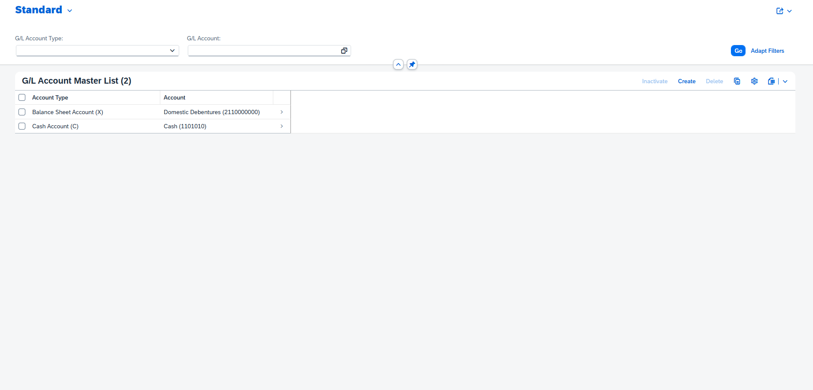
계정 유형과 G/L 계정으로 등록 데이터를 조회합니다.
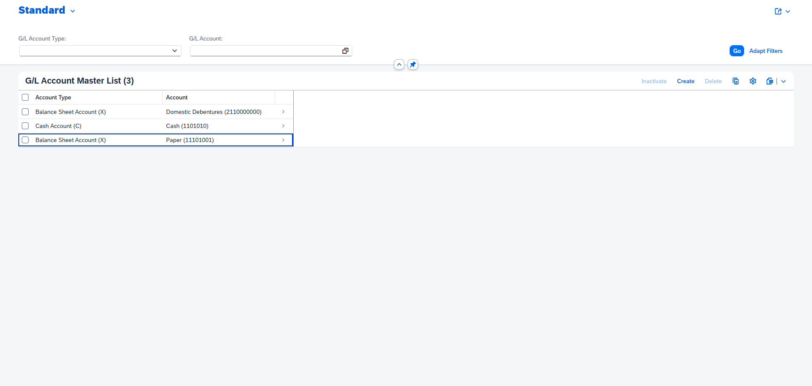
추가된 계정 11101001을 목록에서 확인합니다.
관련 구현
계정 유형·계정번호를 목록에 표시하고 Inactivate 버튼을 Action과 연결합니다.
annotate entity zc_a18_ska1 with
{
@UI: { selectionField: [{ element: 'Glact', position: 10 }],
lineItem: [{ position: 10, importance: #HIGH, label: 'Account Type' },
{ type: #FOR_ACTION, dataAction: 'set_stop_account', label: 'Inactivate' }
]
}
Glact;
@UI: { selectionField: [{ element: 'Saknr', position: 20 }],
lineItem: [{ position: 20, importance: #HIGH, label: 'Account' }]
}
Saknr;
@UI.hidden: true
SakUuid;
@UI.hidden: true
CreatedBy;
@UI.hidden: true
CreationAt;
@UI.hidden: true
ChangedAt;
@UI.hidden: true
ChangedBy;
}선택한 계정의 상태 변경을 명시적 업무 Action으로 제공합니다.
METHOD set_stop_account.
MODIFY ENTITIES OF zr_a18_ska1 IN LOCAL MODE
ENTITY SaknrHeader
UPDATE FIELDS ( Loekz )
WITH VALUE #(
FOR key IN keys (
%tky = key-%tky
Loekz = 'X'
)
).
READ ENTITIES OF zr_a18_ska1 IN LOCAL MODE
ENTITY SaknrHeader
ALL FIELDS
WITH CORRESPONDING #( keys )
RESULT DATA(read_result).
result = VALUE #( FOR ls_read_result IN read_result
( %tky = ls_read_result-%tky
%param = ls_read_result
)
).
ENDMETHOD.계정과 여러 언어의 텍스트를 Composition으로 연결하며, 표시할 설명은 접속 언어로 조회합니다.
관련 구현
계정에 여러 언어의 텍스트를 연결하고 접속 언어에 맞는 설명을 조회합니다.
define root view entity zr_a18_ska1
as select from ZI_A18_SKA1
composition [0..*] of zi_a18_ska1_t as _SaknrText
association [0..1] to zi_a18_ska1_t as _SaknrDesc on $projection.SakUuid = _SaknrDesc.SakUuid
and _SaknrDesc.Spras = $session.system_language
association [0..1] to ZI_A18_GLACT_F4 as _GlactText on $projection.Glact = _GlactText.Glact
{
key SakUuid,
Saknr,
Glact,
Mitkz,
Loekz,
@Semantics.user.createdBy: true
CreatedBy,
@Semantics.systemDateTime.createdAt: true
CreationAt,
@Semantics.user.lastChangedBy: true
ChangedBy,
@Semantics.systemDateTime.lastChangedAt: true
ChangedAt,
/* Associtaions */
_SaknrText,
_SaknrDesc,
_GlactText
}이동유형·거래키·평가클래스와 계정을 연결합니다.
이동유형·거래키·평가클래스와 계정을 연결하는 화면입니다. 생성 시 Bwart별 순번을 계산해 mapped에 반환합니다.

이동유형과 거래키에 연결된 평가클래스·G/L 계정을 조회합니다.
이동유형 101의 순번과 연결 계정 정보가 저장된 화면입니다.
추가한 계정결정 기준을 목록에서 확인합니다.
관련 구현
복합 업무 키의 순번을 생성 시점에 매핑하는 구현입니다.
METHOD earlynumbering_create.
LOOP AT entities INTO DATA(ls_entity).
SELECT SINGLE FROM zta18t030
FIELDS MAX( seqnr )
WHERE bwart = @ls_entity-Bwart
INTO @DATA(lv_max_seqnr).
IF sy-subrc <> 0.
EXIT.
ENDIF.
DATA(lv_seqnr) = lv_max_seqnr + 1.
APPEND VALUE #( %cid = ls_entity-%cid
bwart = ls_entity-Bwart
seqnr = lv_seqnr
) TO mapped-obyc.
ENDLOOP.
ENDMETHOD.싱글톤 Root 아래에서 공급업체 그룹과 언어별 설명을 함께 관리합니다.
SingletonID가 1인 한 개의 Root에서 설정 항목 전체로 진입합니다. CDS의 고정 키와 Composition이 이 구조를 만듭니다.
관련 구현
고정 키 1의 싱글톤 Root 아래에 공급업체 그룹 설정을 모으고, 최종 변경 시각을 집계합니다.
define root view entity ZI_A18SupplierGroupTab_S
as select from I_Language
left outer join ZTA18FDGRV_F on 0 = 0
composition [0..*] of ZI_A18SupplierGroupTab as _A18SupplierGroupTab
{
key 1 as SingletonID,
_A18SupplierGroupTab,
max( ZTA18FDGRV_F.CHANGED_AT ) as LastChangedAtMax,
cast( '' as SXCO_TRANSPORT) as TransportRequestID,
cast( 'X' as ABAP_BOOLEAN preserving type) as HideTransport
}
where I_Language.Language = $session.system_language싱글톤 아래에서 그룹·언어별 설명을 함께 편집합니다. 자식 모델의 부모 연결, Root의 Draft·잠금, 화면의 Select Transport 선언을 함께 볼 수 있습니다.

싱글톤 상세에서 그룹별 한국어·영어 설명을 편집하고 Save·Discard Draft·Select Transport를 사용할 수 있습니다.
관련 구현
그룹과 언어를 키로 사용해 한국어·영어 설명을 관리합니다.
define view entity ZI_A18SupplierGroupTab
as select from ZTA18FDGRV_F
association to parent ZI_A18SupplierGroupTab_S as _A18SupplierGroupAll on $projection.SingletonID = _A18SupplierGroupAll.SingletonID
{
key FDGRV as Fdgrv,
key SPRAS as Spras,
TEXT30 as Text30,
CONFIGDEPRECATIONCODE as ConfigDeprecationCode,
@Semantics.user.createdBy: true
CREATED_BY as CreatedBy,
@Semantics.systemDateTime.createdAt: true
CREATION_AT as CreationAt,
@Semantics.user.lastChangedBy: true
CHANGED_BY as ChangedBy,
@Semantics.systemDateTime.lastChangedAt: true
CHANGED_AT as ChangedAt,
@Semantics.systemDateTime.localInstanceLastChangedAt: true
LOC_CHANGED_AT as LocChangedAt,
1 as SingletonID,
_A18SupplierGroupAll
}싱글톤 Root에서 Draft와 잠금을 관리하고, 자식 항목의 생성·수정·삭제와 전송요청 검증을 연결합니다.
managed with additional save implementation in class ZBP_I_A18SUPPLIERGROUPTAB_S unique;
strict;
with draft;
define behavior for ZI_A18SupplierGroupTab_S alias A18SupplierGroupAll
draft table ZTA18FDGRV_F_D_S
with unmanaged save
lock master total etag LastChangedAtMax
authorization master( global )
{
field ( readonly )
SingletonID;
update;
internal create;
internal delete;
draft action ( features : instance ) Edit;
draft action Activate optimized;
draft action Discard;
draft action Resume;
draft determine action Prepare;
action ( features : instance ) SelectCustomizingTransptReq parameter D_SelectCustomizingTransptReqP result [1] $self;
association _A18SupplierGroupTab { create ( features : instance ); with draft; }
}
define behavior for ZI_A18SupplierGroupTab alias A18SupplierGroupTab
persistent table ZTA18FDGRV_F
draft table ZTA18FDGRV_F_D
etag master LocChangedAt
lock dependent by _A18SupplierGroupAll
authorization dependent by _A18SupplierGroupAll
{
field ( mandatory : create )
Fdgrv,
Spras;
field ( readonly )
SingletonID,
CreatedBy,
CreationAt,
ChangedBy,
ChangedAt,
LocChangedAt;
field ( readonly : update )
Fdgrv,
Spras;
update( features : global );
delete( features : global );
mapping for ZTA18FDGRV_F
{
Fdgrv = FDGRV;
Spras = SPRAS;
Text30 = TEXT30;
ConfigDeprecationCode = CONFIGDEPRECATIONCODE;
CreatedBy = CREATED_BY;
CreationAt = CREATION_AT;
ChangedBy = CHANGED_BY;
ChangedAt = CHANGED_AT;
LocChangedAt = LOC_CHANGED_AT;
}
association _A18SupplierGroupAll { with draft; }
validation ValidateTransportRequest on save ##NOT_ASSIGNED_TO_DETACT { create; update; delete; }
}싱글톤 상세 화면에 자식 설정 테이블을 표시하고 Select Transport 버튼을 Action에 연결합니다.
annotate view ZC_A18SupplierGroupTab_S with
{
@UI.facet: [ {
id: 'Transport',
purpose: #STANDARD,
type: #IDENTIFICATION_REFERENCE,
label: 'Transport',
position: 1 ,
hidden: #(HideTransport)
},
{
id: 'ZI_A18SupplierGroupTab',
purpose: #STANDARD,
type: #LINEITEM_REFERENCE,
label: ' A18 Supplier Group Table',
position: 2 ,
targetElement: '_A18SupplierGroupTab'
} ]
@UI.lineItem: [ {
position: 1
} ]
SingletonID;
@UI.hidden: true
HideTransport;
@UI.identification: [ {
position: 2 ,
importance: #HIGH
},
{
type: #FOR_ACTION,
dataAction: 'SelectCustomizingTransptReq',
label: 'Select Transport'
} ]
TransportRequestID;
}공급업체 그룹, 언어, 설명을 목록 열과 상세 필드에 배치합니다.
annotate view ZC_A18SupplierGroupTab with
{
@UI.identification: [ {
position: 1
} ]
@UI.lineItem: [ {
position: 1
} ]
@UI.facet: [ {
id: 'ZI_A18SupplierGroupTab',
purpose: #STANDARD,
type: #IDENTIFICATION_REFERENCE,
label: ' A18 Supplier Group Table',
position: 1
} ]
Fdgrv;
@UI.identification: [ {
position: 2
} ]
@UI.lineItem: [ {
position: 2
} ]
Spras;
@UI.identification: [ {
position: 3
} ]
@UI.lineItem: [ {
position: 3
} ]
Text30;
@UI.identification: [ {
position: 4
} ]
@UI.lineItem: [ {
position: 4
} ]
ConfigDeprecationCode;
@UI.identification: [ {
position: 5
} ]
CreatedBy;
@UI.identification: [ {
position: 6
} ]
CreationAt;
@UI.identification: [ {
position: 7
} ]
ChangedBy;
@UI.identification: [ {
position: 8
} ]
ChangedAt;
}자재 마스터를 기준으로 읽는 구현 구조입니다. 영속 데이터와 Draft 데이터를 구분하고, CDS 관계를 Behavior와 서비스 노출까지 이어서 구성했습니다.
업무 데이터와 임시 편집 데이터를 각각 보관합니다.
zta18mara / zta18mara_d02Root와 텍스트 자식의 관계, 언어별 조회를 정의합니다.
zr_a18_mara / _MatnrDesc03생성·수정, 검증·채번·Action의 실행 시점을 정합니다.
zbp_r_a18_mara / EML04공개 필드, 검색 도움말과 UI Annotation을 구성합니다.
zc_a18_mara / Metadata05부모와 텍스트 엔티티를 서비스로 노출합니다.
ZUI_A18_MARA기술 키 MatUuid는 managed numbering으로 생성하고, 업무 번호 Matnr는 별도 채번 로직에서 생성합니다. 두 번호의 역할과 생성 방식을 구분했습니다.
각 항목은 앞서 소개한 구현 상세로 바로 연결됩니다. 선언의 위치와 실행 흐름을 함께 설명하는 데 초점을 맞췄습니다.
| 역량 | 구현으로 설명할 내용 | 구현 상세 |
|---|---|---|
| ABAP 업무 처리 | 입금과 채권의 대조, 시뮬레이션·확정 흐름 | 반제 처리 |
| ALV·사용자 이벤트 | 배부 단계의 선택과 결과 조회, 전표 추적 | 단계별 배부 |
| 배치·계정 결정 | 감가상각 계산과 계정 결정 룰 적용 | 감가상각 |
| 공통 결산 통제 | 결산 단계와 기간 확인 로직 재사용 | 결산 통제 |
| CDS·OData 연계 | 업무 데이터를 가공해 분석 화면에 제공 | 수익성 분석 |
| CDS 모델링 | Root / Composition / Projection을 연결하고 언어별 텍스트를 조회합니다. | 자재·언어별 텍스트의 Composition |
| 트랜잭션과 Draft | 영속·Draft 테이블, lock / etag, Prepare와 저장 동작을 선언합니다. | Draft와 저장 시점의 책임 |
| 동적 기능 제어 | 인스턴스 상태에 따라 필드와 Draft Edit 동작을 제어합니다. | 상태에 따른 필드·Edit 제어 |
| 입력·저장 검증 | Precheck의 부분 요청과 저장 시 전체 값 검증을 분리합니다. | 부분 UPDATE에서 최종 비교값 구성 · 저장 시 재검증과 상태 메시지 초기화 |
| EML과 키 매핑 | READ / MODIFY ENTITIES, %tky, %cid, mapped를 목적에 맞게 사용합니다. | 자재번호 생성과 EML 반영 · 부모별 품목번호 Early Numbering |
| 검색 도움말 | additionalBinding과 활성 필터 JOIN으로 선택 범위를 구성합니다. | 종속 Value Help · 사용 가능한 기본단위만 조회 |
| 메시지와 화면 연결 | %path / %state_area / %element, Side Effects로 피드백을 연결합니다. | 저장 시 재검증과 상태 메시지 초기화 · 입력 변경 시 메시지 갱신 선언 |
| Fiori Elements 구성 | Metadata Extension의 Action·목록·상태 표시와 Service Definition을 구성합니다. | UI Annotation으로 목록과 Action 구성 · Projection 엔티티의 서비스 노출 |
ABAP에서는 배부·반제의 업무 규칙과 검토·확정 흐름을, RAP에서는 데이터 관계와 트랜잭션 동작을 구현했습니다. 사용자가 처리 근거와 결과를 확인할 수 있도록 화면과 로직을 함께 구성합니다.